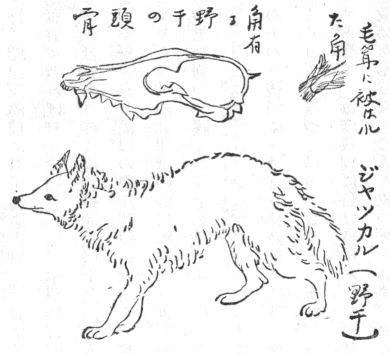

虎
梵名ヴィヤグラ、今のインド語でバグ、南インドのタミル語でピリ、ジャワ名マチャム、マレー名リマウ、アラブ名ニムル、英語でタイガー、その他欧州諸国大抵これに似おり、いずれもギリシアやラテンのチグリスに基づく。そのチグリスなる名は古ペルシア語のチグリ（
箭）より出で、虎の
駛く走るを箭の飛ぶに比べたるに因るならんという。わが国でも古来虎を実際見ずに千里を走ると信じ、戯曲に清正の
捷疾を賞して
千里一跳虎之助などと
洒落て居る。プリニの『博物志』に拠れば生きた虎をローマ人が初めて見たのはアウグスッス帝の代だった。それより前に欧州人が実物を見る事極めて
罕だったから、虎が餌を捕うるため跳る
疾さをペルシアで箭の飛ぶに比べたのを聞き違えてかプリニの第八巻二十五章にこんな
言を述べて居る。
曰く「ヒルカニアとインドに虎あり疾く走る事驚くべし。子を多く産むその子ことごとく取り去られた時最も疾く走る。例えば猟夫
間に乗じその子供を取りて馬を替えて極力
馳せ去るも、父虎もとより一向子の世話を焼かず。母虎巣に帰って変を覚ると直ちに
臭を
嗅いで跡を尋ね箭のごとく走り追う。その声近くなる時猟夫虎の子一つを落す。母これを
銜えて巣に
奔り帰りその子を

きてまた猟夫を追う。また子一つを落すを拾い巣に伴い帰りてまた拾いに奔る。かかる間に猟師余すところの虎の子供を全うして船に乗る。母虎浜に立ちて望み見ていたずらに
惆恨す」と。しかれども十七世紀には欧人東洋に航して
親り
活きた虎を自然生活のまま観察した者多くなり、噂ほど長途を疾く走るものでないと解ったので、英国サー・トマス・ブラウンの『
俗説弁惑』にプリニの説を破り居る。李時珍いう虎はその声に
象ると、虎唐音フウ、虎がフウと
吼えるその声をそのまま名としたというんだ。これはしかるべき説で
凡てどこでもオノマトープとて動物の声をその物の名としたのがすこぶる多い。往年『学芸志林』で浜田健次郎君がわが国の諸例を詳しく述べられた。虎の異名多くある中に
晋梁以後の書にしばしば大虫と呼んだ事が見える。大きな動物すなわち大親分と尊称した語らしい。スウェーデンの
牧牛女は狼を
黙者、
灰色脚、
金歯など呼び、熊を
老爺、
大父、十二
人力、
金脚など名づけ決してその本名を呼ばず、また同国の小農輩キリスト昇天日の前の第二週の間鼠蛇等の名を言わず、いずれもその害を避けんためだ（ロイド『
瑞典小農生活』）。カナリース族は矮の本名を言わずベンガルでは必ず虎を
外叔父と唱う（リウィス『
錫蘭俗伝』）。わが
邦にも諸職各々
忌詞あって、『
北越雪譜』に
杣人や猟師が熊狼から女根まで決して本名を
称えぬ例を挙げ、熊野でも
兎を
巫輩狼を山の神また御客様など言い山中で天狗を天狗と呼ばず
高様と言った。また支那で虎を
李耳と称う、晋の
郭璞は〈虎物を食うに耳に
値えばすなわち
止む、故に李耳と呼ぶ、その
諱に触るればなり〉、漢の
応劭は南郡の李翁が虎に化けた故李耳と名づくと言ったが、明の李時珍これを妄とし李耳は
狸児を
訛ったので、今も南支那人虎を呼んで猫と為すと言った。狸は日本で
専ら「たぬき」と
訓ますが支那では「たぬき」のほかに学名フェリス・ヴィヴェリナ、フェリス・マヌル等の野猫をも狸と呼ぶ。したがって野狸に
別たんとて猫を家狸と異名す。因って想うに仏経に竜を罵って小蛇子と言うごとく狸児は虎を蔑して児猫といった意味だろう。これに似て日本で猫を虎に
擬えた事『
世事百談』に「虎を猫とは大小剛柔遥かに
殊なるといえども、その形状の相類する事絶えて能く似たり、されば我邦の
古え猫を手飼の虎といえる事『
古今六帖』の歌に「
浅茅生の小野の篠原いかなれば、手飼の虎の
伏所なる」、また『源氏物語』女三宮の条に見えたり、
唐土の小説に虎を山猫という事、『西遊記』第十三回〈虎穴に陥って金星厄を
解く〉といえる条に「〈伯欽
道う風
 是個
是個の山猫来れり云々、只見る一隻の班爛虎〉」とあり云々」、これも伯欽が勇を
恃んで虎を山猫と蔑語したのだ。
虎の記載を学術上七面倒に書くより『本草綱目』に引いた『格物論』（唐代の物という）を
又引するが一番手軽うて解りやすい。いわく虎は山獣の君なり、
状猫のごとくにて大きさ牛のごとく
黄質黒章、
鋸牙鉤爪鬚健にして
尖り舌大きさ掌のごとく
倒に
刺を生ず、
項短く鼻
る、これまでは誠に文簡にして写生の妙を極め居る。さてそれから追々支那人流の
法螺を吹き出していわく、夜視るに一目は光を放ち、一目は物を
看る、声
吼ゆる事雷のごとく風従って生じ百獣震え恐るとある。しかし全くの虚譚でもないらしく思わるるは予闇室に猫を閉じ
籠めて毎度
験すと、こちらの見ようと、またあちらの向きようで一目強く光を放ち、他の目はなきがごとく暗い事がしばしばあった。また虎
嘯けば風生ずとか風は虎に従うとかいうは、支那の暦に立秋虎始めて嘯くとあるごとく、秋風吹く頃より専ら嘯く故虎が鳴くのと風が吹くのと同時に起る例が至って多いのだろう。予が現住する
田辺の船頭大波に逢うとオイオイオイと
連呼くれば
鎮まるといい、町内の男子暴風吹き
荒むと大声挙げて風を制止する俗習がある。
両ながら予その場に臨んで
験したが波風が呼声を聞いて停止するでなく、人が風波のやむまで呼び続けるのだった。バッチの『
埃及諸神譜』に古エジプト人
狗頭猴を暁の精とし日が地平より昇りおわればこの
猴に化すと信じた。実はこの猴アフリカの林中に多く棲み日の出前ごとに喧噪呼号するを暁の精が旭を歓迎頌讃すと心得たからだと
出づ。これも猴に呼ばれて旭が出るでなく旭が出掛かるによって猴が騒ぐのだ。さて虎も
獅も同じく猫属の獣で外貌は大いに
差うが
骨骼や爪や歯牙は余り違わぬ、毛と皮が大いに異なるのだ。ただし虎の
髑髏を獅のと較べると獅の
鼻梁と上顎骨が一線を成して額骨と
画れ居るに虎の鼻梁は上顎骨よりも高く額骨に突き上り居る、獅は
最大いなるもの
鼻尖から尾の端まで十フィート六インチなるに虎は十一フィートに達するがある由。インドや南アジア諸島の虎は毛短く滑らかで色深く
章条鮮やかなるに、北支那やシベリア等寒地に棲むものは毛長く色淡し、虎の産地はアジアに限りアムール州を最北限、スマトラ、ジャワとバリを最南限とし、東は
樺太、西は土領ジョルジアに達すれど日本およびセイロン、ボルネオ等諸島にこれなし、インドの虎は専ら牛鹿
野猪孔雀を食いまた蛙や他の小猛獣をも食い
往々人を
啖う。
創を受けまた究迫さるるにあらざれば人と争闘せず。
毎も人を食う奴は勢
竭き歯弱れる老虎で村落近く棲み野獣よりも人を捉うるを便とす、草野と沼沢に棲む事多きも林中にも住み、また古建築の
廃址に居るを好く、水を泳ぐが上手で急がぬ時は前足もて浅深を試みて後渡る。虎ごとに
章条異なり、また一
疋の体で左右異なるもある。『淵鑑類函』巻四二九に虎骨
甚だ異なり、
咫尺浅草といえども
能く身伏して
露われず、その
然声を
作すに及んではすなわち
巍然として大なりとある。動物園や博物館で見ると虎ほど目に立つ物はないようだが、実際野に伏す時は草葉やその蔭を虎の章条と混じやすくて目立たず、わずかに低く薄く生えた
叢の上に伏すもなお見分けにくい、それを支那人が誤って骨があるいは伸び
脹れあるいは縮小して虎の身が大小変化するとしたんだ。バルフォールの『印度事彙』に人あり孕んだ牝虎を十七疋まで銃殺し
剖いて見ると必ず腹に四児を持っていた。しかるに生まれて
最幼き児が三疋より多く母に
伴れられ居るを見ず、自分で餌を
覓るほど長じた児が二疋より多く母に
偕われ居るを見なんだ。因って想うに四疋孕んでその内一、二疋は必ず死んで産まるるんだろう。インド土人いわく虎子を生まばきっとその一疋は父虎に食わると、ロメーンスの説に猫
甚く子を愛するの余り、人がむやみにその子に
触るを見ると自分で自分の子を食ってしまうとあった。予本邦の猫についてその事実たることを目撃した。虎も四疋生みながら、一、二疋足手纏いになり過ぎるので食ってしまうのかも知れぬ。虎一生一乳、乳必双虎と『類函』にも見ゆ、また人これに
遇うもの敵勢を
作ししばしば引いて曲路に至りすなわち避け去るべし。けだし虎頂短くて回顧する
能わず直行する故なりとある、これも事実らしい。ウットの『
博物画譜』に虎道傍にあって餌獣の至るを
俟つに必ず自分の巣に対せる側においてす。これ獣を捉えて
真直ぐに巣に行かんためで、もし巣の側にあって餌を捉えたら真直ぐに遠い向側に進み、それから身を廻して道を横ぎり元の巣の側へ
還る迂路を取らねばならぬからだ。また虎が餌獣を打たんとて跳びついて仕損じたら
周章て
慙愧り二度試みて見ずに低頭して去るとある。支那にも『本草』にその物を
搏つや
三たび
躍って
中らずんばすなわちこれを捨つと
出づ。川柳に「三たび
口説いて聴かれず身
退く振られ客」とあるごとし、『爾雅』に虎の浅毛なるを
山
、白いのを
※［＃「彪」の「彡」に代えて「甘」、U+751D、12-15］、黒きを
※［＃「彪」の「彡」に代えて「夂／（黨−尚）」、12-15］、虎に似て五指のを

、虎に似て真でないを
彪、虎に似て角あるを
※［＃「褫のつくり」、U+8652、12-16］というと言って、むつかしい文字ばかり
列べ居る。『国史補』には四指のを
天虎五指のを人虎と俗称すと出づ。ちょっと聞くと誠に出任せな
譫語のようだが実は支那に古来虎多く、その民また特に虎に注意して色々と区別を付ける事あたかもわが邦で鷹や馬に色々種別を立てたごとし。サモエデスは
馴鹿に注意深き余りその灰褐色の浅深を十一、二の別名で言い分け、アフリカのヘレロ人は盛んに牧牛に勤め牛の毛色を言い分くる語すこぶる多く、芝や空の色を一つの語で混じ言うを何とも思わぬが牛の褐色を種別して言い能わぬ者を
大痴とす（ラッツェル『
人類史』巻一）。田辺の漁夫は大きさに
準って
鰤を「つはだ、いなだ、はまち、めじろ、ぶり」と即座に言い別くる。しかるに綿羊と山羊の見分けが出来ぬ。開明を以て誇る英米人が兄弟をブラザー姉妹をシスターと言うて、兄と弟、姉と妹をそれぞれ手軽く言い
顕す語がないのでアフリカ行の宣教師が聖書を講ずる際、
某人は
某人のブラザーだと説くと、黒人がそれは兄か弟かと問い返し返答に毎々困るというが（ラッツェル『人類史』二）、予もイタリア書に甥も孫もニポテとあるを見るごとにどっちか分らず大いに
面喫う事である。
『本草』に虎が
狗を食えば酔う狗は虎の酒だ、また虎は羊の角を焼いた煙を忌みその
臭を
悪んで逃げ去る、また人や諸獣に勝つが
蝟に制せらるとある。佐藤成裕の『中陵漫録』二に虎狗を好み狗
赤小豆を好み猫
天蓼を好み狐焼鼠を好み
猩桃を好み鼠
蕎麦を好み
雉子胡麻を好み、虎狗を食して淫を起し狗
赤小豆を食して百疾を
癒し猫天蓼を

うてしきりに
接る、狐焼鼠を見て命を失う猩桃を得て空に
擲つ、鼠蕎麦に就いて去る事を知らず、雉子胡麻を食して毎朝来ると見ゆ。皆まで嘘でなかろう、虎が蝟に制せらるるは昨今聞かぬが
豪猪を
搏つとてその
刺に犯され致命傷を受くる事は近年も聞くところだ。『物類相感志』に虎が人を食うごとに耳上に欠痕もしくは割裂を生ずる、その数を験して何人食ったと判るとある。また『淵鑑類函』に〈虎小児を食わず、児痴にして虎の懼るべきを知らず、故に食わず、また酔人を食わず、必ず坐して守り以てその
醒むるを
俟つ、その醒むるを俟つにあらず、その懼るるを俟つなり〉とある、自分を懼れぬ者を食わぬのだ。さていわく〈およそ男子を食う必ず勢より起る、婦人は必ず乳より起る、ただ婦人の陰を食わず〉とは大椿件だ。十六世紀にレオ・アフリカヌスが著した『
亜非利加紀行』に婦女山中で獅に出会うた時その陰を
露せばたちまち眼を低うして去るとある。これは
邪視を避くるに女陰を以てすると同一の迷信から出たらしい。邪視の詳しき事は、『東京人類学会雑誌』二七八号二九二頁以下に長く述べ置いた、ただし支那説は虎が女陰を食わぬばかりで、見たら逃げるとないからアフリカの獅のごとくこれを怖るるでなく単にその臭味を忌む事という意味らしい。
『
大英類典』第十一版巻二十六に「牝虎は二ないし五、六児を一度に産むが三疋が普通だ、その子を愛する事甚だしく最も注意してこれを守る、生れて二年目に
早自分で餌を求める、それまで母と一緒に居る、その間母虎の性殊に兇暴で子が乳離れする頃より鹿
犢豕等を
搏って見せその法を教ゆ、この際牝虎の猛勢惨酷その極に達する、多分子を激して手練を積ましむるためだろう、さて十分殺獲術を究めた上ならでは子と離れぬ、若い虎は老虎より
迥かに物多く殺し一度に三、四牛を殺す事あり、老虎は一度に一つより多く殺す事
稀で、それも三、四また七日に一度だ」とある。虎が一たび人を
啖うとその癖が付く。インドのニルゲリ山間などは虎はあれど人を殺す事至って稀だが家に飼った水牛を害する事しきりだ（リウァース著『トダ人族篇』四三二頁）。このほど死んだワレス氏が六十年前シンガポールに寓した時常に近所を
彷徨く虎若干ありて、新開の
阿仙薬園に働く支那人を平均日に一人ずつ殺したと『
巫来群島篇』第二章に言われた。十七世紀に支那に宣教したナヴワレッテがキリスト教を奉ずる支那人に聞いたは、その頃百また二百虎群を成して広東より海関に至る、旅人百五十人以上隊を組むにあらざれば旅し得ず、これがため僅々数年間に五万人死せりとは大層な話ながらかかる話の行わるるを見て
如何に虎害が支那に繁かりしかを察せらるる。また支那の書に馬虎を載す、全く馬同様だが鱗を
被り虎の爪あり、性殺を好む、春日川より出でて人畜を捉うと。欧人湖南にこの獣ありと聞き往って
精しく捜せしも見出さず全然法螺話だろうという（アストレイ『
新編紀行航記全集』巻四、頁三一三）。これは『
水経註』に見えた水虎の話を西人が誤聞したのでないか。『本草綱目』虫部や『和漢三才図会』巻四十にも引かれ、わが国の
河童だろうという人多いが確かならぬ。エイモニエーの『安南記』にはオラングライー族の村に虎入りて人なり犬なり豕なり一頭でも捉わるると直ぐ村を他処へ移すと見ゆ。一七六九年インドの北西部飢饉し牛多く死し虎常時の食を得ず、ブハワバール市を侵しおよそ四百人を
殲し、住民逃げ散じて市ために数年間空虚となったとクルックの『
西北印度諸州篇』に見え、次に開化の増進に随い虎が追々減少する事体を述べ居る。虎を狩る法は種々あり、虎自身が触れ動かして捕わるる弾弓や、落ちたら出る事ならぬ
穽や木葉に
黐塗りて虎に
粘き狂うてついに眼が見えぬに至らしむる
設計等あるが、欧人インドで虎を狩るには銃を揃え象に乗って撃つのだ。康煕帝自ら虎狩せしを見た西人の記には専ら槍手隊を使うたよう出で居る。遼元の諸朝は主として弓を用いたらしい。『類函』四二九巻に陳氏義興山中に
家む、夜虎門に当って大いに
吼ゆるを聞き、開き
視れば
一少艾衣類凋損たれど
妍姿傷ねず問うてこれ商人の
女母に随い塚に上り寒食を
作すところを虎に搏たれ逃げ来た者と知り、見れば見るほど
麗しいから陳の妻が
能くわが子婦たらんかと問うと諾した。依ってその季子に配す。月を
踰えてその父母尋ね来り喜び甚だしく遂に婚姻を為し
目けて虎媒といったとある。
虎を殺した者を
褒むるは虎棲む国の常法だ。秦の
昭襄王の時白虎害を為せしかば能く殺す者を募る、夷人
 廖仲薬［＃ルビの「りょうちゅうやく」は底本では「こうちゅうやく」］秦精
廖仲薬［＃ルビの「りょうちゅうやく」は底本では「こうちゅうやく」］秦精等
弩を高楼に伏せて射殺す、王曰く虎四郡を
経すべて千二百人を害せり、一朝これを降せる功
焉より大なるはなしとて石を刻んで盟を成したと『類函』に『華陽国志』を引いて居るが、かかる猛虎を殺した報酬に石を刻んで盟を成したばかりでは一向詰まらぬ、きっと何物かくれたのじゃろう。一六八三年ヴェネチア版、ヴィンツェンツォ・マリア師の『
東方遊記』に西インドコチン王は
躬ら重臣輩の見る所で白質黒条の虎を獲るにあらざれば即位するを得ず、この辺の虎に三品あり武功の次第に因ってそれぞれの虎の皮を楯に用い得る、また虎を殺した者は直ちにその鬚と舌を抜き王に献ず、王受け取ってこれを焼きその勇者に武士号を与え金また銀に金を
被せたる
環中空にして
小礫また種子を入れたるを賜う。勇士これを腕に貫けば身動くごとに鳴る事鈴のごとし。かくて虎の
尸もしくはその一部を
提え諸方を巡遊すれば衆集まり来りてこれを見贈遺多く数日にして富足るとある。これに似た一事を挙げんにアフリカの仏領コンゴー国では蟹（ンカラ）を海の印号とし虎に縁近き豹（ンゴ）を陸の印号としまた王家の印号とす。因って豹を尊ぶ事無類で王族ならではその皮を
衣るを得ず、これを
猟り殺すに種々の作法あり、例せばデンネットの『フィオート民俗篇』（一八九七年版）十八章に「豹を殺した者あると聞いて吾輩
忙いで町へ
還った、何故というと豹が殺された時は各町民が思うままに他町民と勝手次第に相掠奪す、殺した人が豹皮を王に献ずる日はその人思い付きのまま町のどの部分でも通り、その間家内にさえなくば何でもかでも押領し得るんだ、さてかの者自身縛られて王前に
詣り叮嚀に豹首を布に包み携う、王問う「吾子よ何故汝はこの人（豹）を殺したか」、豹殺し
対う「彼は甚だ危険な人で王の民の羊や鶏を夥しく殺しました」、王いわく「吾子よ汝は善くした、それじゃ彼の
髯を数え見よ、汝も知る通りすべて三九二十七毛あるはずだ、一つでも足らなんだら汝は
孤に布二匹を
賠わにゃならぬ」、かの者答う「父よ勘定が合うて二十七毛確かにござります」、王「そんなら
注意髯を皆抜け、次に歯と爪と皮もことごとく取って孤の用に立てよ」、豹殺し命のまにまに抜き取り剥ぎ取りおわる、ここにおいて王言う「吾子よ汝は大勇の猟師だから爾後狩に出る時食事を
調うる者を欲しいだろ、因ってこの若い
嬢子を汝の婢なり妾なりにして取って置け」と聞いて豹殺し腰抜かすばかり
悦びながら「父様見やんせ、余りに衣類が
弊れているので、とてもこんな結構な品を戴かれません」、王「吾子よ最もな事を
吐す、さらばこの衣類を遣わすからそこで着よ」、豹殺し「父様有難くて
冥加に余って誠にどうもどうも、しかしこんな
尤物に木を
斫ってやる人がござらぬ」、王「委細は先刻から承知の介だ、この少童を伴れ去って木を斫らすがよい、またこの人を
遣るから鉄砲を持たせ」、豹殺し「父よ今こそ掌を
掌って御礼を
白します」、そこで王この盛事のために大饗宴を張る」とある。小説ながら『水滸伝』の武行者や黒旋風が虎を殺して村民に大持てなところは宋元時代の風俗を実写したに相違ない。
盗人にも三分の理ありとか、虎はかく人畜を残害するもののそれは「柿食いに来るは烏の道理
哉」で、食肉獣の悲しさ他の動物を生食せずば自分の命が立ち往かぬからやむを得ぬ事だ、既に故ハクスレーも人が獣を何の必要なしに残殺するは不道徳を免れぬが虎や熊が牛馬を害したって不道徳でなくて無道徳だと言われたと
憶える。
閑話休題、虎はまず猛獣中のもっとも大きな物で毛皮美麗貌形雄偉行動また何となく
痒序たところから東洋諸邦殊に支那で獣中の王として尊ばれた。『説文』に虎を獣君という、山獣の君たればなり、また山君というと、わが邦で狼を大神と呼び今も熊野でこれを獣の王としまた山の神と称うるごとし。『揚子』に聖人虎別、君子豹別、弁人狸別、狸変ずればすなわち豹、豹変ずればすなわち虎、これは聖人君子弁人を順次虎豹狸に比べたのだ。『管子』に〈虎豹は獣の猛者なり、深林広沢の中に居る、すなわち人その威を畏れてこれを載す、虎豹その幽を去って而して人に近づくすなわち人これを得てその威を
易る、故に曰く虎豹幽に
託って威載すべきなり〉。熊楠
謂うに昔
朱
隠居して仕えず、
閻負涼に使し
を以て王猛に比し並称す。秦主
苻堅猛を侍中とせし時猛
に譲れり、のち猛死し堅南晋に
寇せんとす、苻融石越等皆
諫めしも
独りこれを賛し、にわかに

水の敗を致し以て亡国に至れり、これ
豈景略（王猛の字）の
匹ならんや、処士虚声を盗む
何代か人なからんと王阮亭は言った（『池北偶談』巻二）。ちょうど虎豹が林沢におれば威あり、幽棲を去って人に近づくと三文の値もなくなるに似たり、インドでは欧州と等しく
獅を獣王とす、仏を獅に比べた文諸経に多い、たとえば隋訳『大集譬喩王経』上にいわく、仏言う
舎利弗譬えば
須弥山王金色辺あり、もし諸鳥獣その辺に至らば皆同一色いわゆる金色なればすなわち
師子獣王と同色なり、諸鳥獣既に師子と同一金色なりといえどもその力勢功徳名称ことごとく師子王と等しからず、またまた師子獣王遊戯するにしきりに無畏吼声を発するごとくならずとて、
声聞と独覚が多少如来に似たところあるもその間全く懸隔しいるに
喩えある。
玄奘が訳した『大毘婆娑論』巻百三に菩薩菩提樹下に修道する所に魔王攻め来る、菩薩念ずらく魔軍鳥形を
作し来らば我れ猫狸形を作して敵せん、魔軍猫狸形を作し来らば我れ狗狼形を作して敵せん、魔軍狗狼形を作し来らば豺豹形、豺豹形で来らば虎形、虎形で来ると師子形、師子形で来るなら竜鱗を化作し竜鱗で来たら猛火、猛火で来たら暴雨、暴雨で来たら大蓋を化作してこれに敵せんと、鳥に初まって大蓋に至るその間
逓次後者が前者より強い、しかして虎より獅、獅より竜鱗、それから火、次に雨、次に蓋が一番強いとしているが、蓋は鳥に啄き破らるべきものだからこの目次中の最強者が最弱者より弱い事となる。想うに
一九などの小説にしばしば繰り返された一話はこの仏語より来たんでないか、いわく猫を
畜って名を
命んと苦心し猫は猫だから猫と
号づく、さて
攷うると猫より強いから虎、それよりも強い故竜、竜は雲なくんば行き得ぬ故雲、雨ふれば雲散ずる故雨、それを吹き飛ばす風、風を防ぎ遮る障子、それを噛み破る鼠と段々改称してさて鼠より猫が強いので猫を猫と号づけて最初の名に戻ったと。虎や獅に王威ある由を述べたついでに言い置くは虎の威を仮る狐てふ諺だ、これは
江乙が楚王に〈狐虎の威を仮る〉と言った故事で『戦国策』に出ている。『今昔物語集』巻五第二十一語に
天竺の山に狐と虎住み、その狐虎の威を仮りて諸獣を
恐す、虎行きて狐を責め狐恐れて逃ぐるほどに井に落ちたとありて、弁財天と
堅 地神
地神の縁起譚だがその出処が解らぬ。芳賀博士の攷証本にも
聢と出ておらぬ、多分インドで出来たのでなく江乙の語に拠って支那で作られたものかと思う。
マルコポロ紀行に元
世祖将官に位勲の牌を賜い佩用せしむるに、金また銀を
鍍した牌に獅の頭を
鐫り付けたとあるが、ユールの註に拠るとマルコの書諸所に虎を獅と訛称しあるそうだ。古くより
虎賁などいう武官職名もあり、虎符を用いた事もあるから件の牌には虎頭を鐫り付けたのだろう。今日といえどもアフリカで虎と呼ぶは豹でアメリカで虎と呼ぶは旧世界に全くなきジャギュアル、また獅と呼ぶのは同じく東半球に住まぬピューマなるなど猫属の諸獣の性質
酷だ相似たる点から名称の混雑は
尠なくない。
『戦国策』に人あり
係蹄を置きて虎を得たるに、虎怒りて

を
決って去る、虎の情その
を愛せざるにあらざれど、
環寸の
を以て七尺の躯を害せざる者は権なりとあって虎の決断を
褒め居る。ロメーンスの説に狐が足を係蹄に捉われて危殆と見ると即刻自ら咬み切って逃ぐるは事実だとある。『
大英類典』第十一版獅の条を見ると近来獅の性実は卑怯なる由言う人多しとあって、要は人と同じく獅もことごとく勇猛ならず、中には至って臆病な奴もありなんと結論し居る。かかる噂は今に始まったのでなくレオ・アフリカヌスが十六世紀に既に言って居る。モロッコのマグラ市近き野に獅が多いが極めて
怯懦で、小児が叱ると狼狽
遁げ
去る、その辺の大都フェスの諺に口ばかり剛情な怯者を
詈って汝はアグラの獅ほど勇なり
犢にさえ尾を
啖わるべしというとある。虎もこの例で至って臆病なのもあるらしく、前年スヴェン・ヘジン、チベット辺で水を渡る虎の尾を小児に曳かれて何事もなからざりしを見たと何かで読んだ。さらば虎に勝った勇士の内には真の勇士でなくて機会
好く怯弱な虎に出逢って迎えざるの誉れを得たのもあるだろう。『瑣語』に周王太子宜臼を虎に
啗わさんとした時太子虎を叱ると耳を
低れて服したといい、『衝波伝』に孔子山に遊び子路をして水を取らしむ水所にて虎に逢い戦うてその尾を
攬りこれを得懐に
内れ水を取って
還る、さて孔子に問いけるは上士虎を殺す
如何、子
曰く虎頭を持つ、また中士の作法を問うと耳を捉えると答えた、下士虎を殺さば
如何すると問うと、虎の尾を捉えると答えたので子路自分の下士たるを
慙じ尾を出して棄てたとある。子路は至って勇ありしと聞くが周王太子などいずれ柔弱な人なるべきに叱られて服した虎はよほど弱腰の生れだったと見える。『
朝野僉載』には大酔して崖辺で
睡った人の上へ虎が来て嗅ぐと虎鬚がその人の鼻孔に入りハックションと
遣った声に驚きその虎が崖から落ちて人に得られたとある。
ローマ帝国の盛時虎を多く
畜って闘わしめまた車を
牽かせた例もある。今もジャワで虎や犀を闘わす由（ラッツェル『人類史』二）、『管子』に桀王の時女楽三万人虎を市に放ってその驚駭を見て
娯んだとあるから、支那にも古くから帝王が畜ったのだろう。
虎が仙人や僧に仕えた話は支那にすこぶる多い。例せば西晋の末
天竺より支那に来た博識
耆域は渉船を断られて虎に
騎って川を渡り、北斉の僧稠は錫杖を以て両虎の交闘を解く、後梁の法聡は坐するところの
縄牀の両各々一虎あり、晋安王来りしも進む能わず、聡手を以て頭を
按え地に
著けその両目を閉ざしめ、王を召し展礼せしむとはなかなか
豪い坊主だ。王境内虎災大きを救えと乞うと入定する事
須臾にして十七大虎来る、すなわち戒を授け百姓を犯すなからしめた、また弟子に命じ布の
故衣で諸虎の頸を繋ぐ、七日経て王また来り
斎を設くると諸虎も僧徒と共に至る、食を与え布を解きやるとその後害を成さず、唐の豊干禅師が虎に騎って松門に入ったは名高い
談で後趙の竺仏調は山で大雪に会うと虎が窟を譲ってその内に臥さしめ自分は下山した、唐の僖宗の子普聞禅師は山に入って菜なきを憂うると虎が行者に化けてその種子をくれて耕植し得た、南嶽の慧思は山に水なきを
患うると二虎あり師を引きて嶺に登り地を

いて
哮ると虎
泉とて素敵な浄水が湧出した、また朝廷から詰問使が来た時二虎石橋を守り吼えてこれを
郤けた、『独異志』に劉牧南山野中に
果蔬を植えると人多く樹を
伐り
囿を
践む、にわかに二虎来り近づき居り牧を見て尾を
揺がす、我を護るつもりかと問うと首を
俛せてさようと言う
態だった、牧死んで後虎が去ったと『類函』に引いて居る。虎が孝子を恵んだ話は『二十四孝』の内にもあるが、ほかにも宋の朱泰貧乏で百里
薪を
鬻ぎ母を養う、ある時虎来り泰を負うて去らんとす、泰声を

して我は惜しむに足らず母を託する方なしと歎くと虎が放ち去った、里人輩感心して醵金を遣り虎残と名づけた。また楊豊虎に噛まる、十四になる娘が手に刀刃なきに直ちに虎頭を捉えて父の難を救うたとある。予もそんな孝行をして見たいが子孝ならんと欲すれども父母
俟たずで、海外留学中に
双親とも冥途に往かれたから今さら何ともならぬ。
史書や伝記に載った虎に関する話はすこぶる夥しいから今ただ手当り次第に略述する事とせり。まず虎が恩を人に報じた例を
［＃「例を」は底本では「礼を」］挙げると、晋の干宝の『捜神記』に廬陵の婦人蘇易なる者善く産を看る、夜たちまち虎に取られ、行く事六、七里、
大壙に至り地に置き
蹲りて守る、そこに牝虎あり難産中で易を仰ぎ
視る、因って助けて三子を産ましめると虎がまた易を負うて宅へ還し、返礼に獣肉を易の門内に再三送ったと見ゆ。天主教僧ニコラス・デル・テコの『南米諸州誌』に、一五三五年、メンドツァ今日アルゼンチナ国の首都ブエノサイレスの地に初めて殖民地を建て、程無く土蕃と難を構え大敗し、次いで糧食乏しくなりて人
相食むに

んだ、その時一婦人坐して餓死するよりはいっそインディアンか野獣に殺さるるが
優と決心して、広野に
彷徨う中ある窟に
亜米利加獅の牝が子を産むに苦しむを見、大胆にも進んで産婆の役をして遣った、
米獅これを徳とし産後外出して獣を
搏ち
将ち来て肉を子供と彼女に分ちくれたので餓死を免がれた、そのうちインディアンが彼女を
擒り、種々難儀な目に遭わせたが、遂にスペイン人に
賠われて城に帰った、それは
吉かったが全体この女性質慓悍で上長の人の命に
遵わぬから遂に野獣に
啖わす刑に処せられた、ところが天幸にも一番に彼女を啖わんと近づき寄ったのが、以前出産を助けもろうた
牝米獅で、見るより気が付き、これは飛んだところで御目に懸ります、
忰どもも一人前になって毎度御噂を致しいる、女ながらも西大陸の獣中王たる
妾が
御恩報しに腕を見せましょうと、口に言わねど畜生にも相応の人情ありて、爪牙を尖らせ他の諸獣を
捍いで一向彼女に近づかしめず、見物一同これほど奇特な
米獅に免じて彼女を赦さずば、人間が畜生に及ばぬ証明をするようなもの、人として獣に
羞じざらめやと感動して彼女を許し、久しく無事で活命させたとある。『淵鑑類函』に晋の郭文かつて虎あり、たちまち口を張って文に向うたんで視ると口中に骨
哽り、手を以て
去ってやると明日鹿一疋持ち来って献じた。また都区宝という人父の喪で籠りいた時里人虎を追う、虎その廬に
匿れたのを宝が簔で
蔵しやって免がれしめた、それから時々野獣を負ってくれに来たとある。古ギリシアの人が獅のために
刺を抜きやり、のち罪獲て
有司その人を獅に啖わすとちょうど以前刺を抜いてやった獅であって一向啖おうとせず、依って罪を赦された話は誰も知るところだ。これらはちょっと聞くと嘘ばかりのようだが予年久しく経験するところに故ロメーンス氏の説などを
攷え合わすと猫や
梟は獲物を人に見せて誇る性がある、お手の物たる鼠ばかりでなく猫は
蝙蝠、梟は蛇や
蟾蜍など持ち来り予の前へさらけ出し誠に迷惑な事度々だった。故セントジョージ・ミヴワートは学者
一汎に猴類を哺乳動物中最高度に発達したる者と断定し居るは、人と猴類と体格すこぶる近く、その人が自分免許で万物の長と
己惚るる縁に付けて猴が獣中の最高位を占めたに過ぎぬが、人も猴も体格の完備した点からいうと遠く猫属すなわち猫や虎豹獅米獅等の輩に及ばぬと論じた。この事については熊楠いまだ公けにせぬ年来の大議論があって、かつて福本日南に
大英博物館で諸標品について長々しく説教し、日南感嘆して真に天下の奇才と称揚されたが、日本の官吏など自分の
穢い根性から万事万物汚く見る故折角の名説も日本では出し得ず、これを公にすると直ぐに風俗壊乱などとやられる。ここばかりに日が照らぬからいずれ海外で出す事としよう、とにかく眼で
視数で測り得る体格上でさえ人間の己惚れから観察に錯誤ある事ミヴワートの説のごとし、まして他の諸動物の心性の上に至っては近時まで学者も何たる仔細の観察をまるでせなんだ、これは
耶蘇教で人は上帝特別の思召しもて他の諸動物と絶えて別に創作された物といい伝えたからで、それなら人と諸動物と業報次第
輪廻転生すと説く仏教を奉じた東洋の学者は諸動物の心性を深く究めたかというと、なるほど仏教の経論に多少そんな論もあるが、後世の学者が一向気に留めなんだから何の増補
研覈するところなかった、人と諸動物の心性の比較論はなかなか一朝にして言い尽すべきでないが、諸動物中にも特種の心性の発達に甚だしく逕庭がある、その例としてラカッサニュは犬が恩を
記ゆる事かくまで発達しおるに人の見る前で交会して少しも羞じざると反対に、猫が恩を記ゆる事甚だ少なきに交会の態を人に見する事なきを挙げた。ただし猫のうちにも不行儀なもあって、予は英国で一回わが邦で二回市街で人の多く見る所で猫が交わるを見た。また貝原益軒は猫の特質として死ぬ時の貌いかにも
醜いから必ず死ぬ態を人に見せぬと言って居る。猫属の輩は羞恥という念に富んでいるもので、虎や豹が獣を搏ち損う時は大いに恥じた風で
周章て首を
低れて這い廻り逃げ去るは実際を見た者のしばしば述べたところだ。『本草』にも〈それ物を搏ち三躍して
中らざればすなわちこれを捨つ〉と出づ。獣の中には色々変な心性の奴もあって
大食獣とて
鼬と熊の類の間にあるものは、両半球の北極地に住み幽囚中でも肉十三ポンドすなわち一貫五百七十二
匁余ずつ毎日食う、野にあるうちはどれだけ大食するか知れぬ至極の難物だが、このものの奇質は貯蓄のため食物を盗みまた自分の害になる
係蹄を
窃み隠すのみか、猟師の舎に入って毛氈鉄砲
薬鑵小刀その他一切の什具を盗み去って諸処に匿すのだ、これらは食うためでないからただただ好奇心から出る事と知らる（ウット『
博物画譜』巻一、『
大英類典』十一版、巻十二）。言わばこの獣は人間に
窃盗狂に罹ったように心性が窃みの方に発達を極め居るのだ。因って想うに虎や獅や米獅は時として友愛の情が甚だ盛んな性質で、自分を助けくれた人を同類と見做し、猫や梟同前手柄自慢で種々の物を捉えて見せに来る、特に礼物進上という訳でないが、人の立場から見るとちょうど助けやった返礼に物を持ち来てくれる事となるのだろう。
わが国で寅年に生れた男女に
於菟という名を付ける例がしばしばある、その由来は『左伝』に楚の
若敖、
より妻を娶り闘伯比を生む、若敖卒してのち母と共にに
畜わるる間子の女に淫し
令尹子文を生んだ、の夫人これを夢中に
弃てしむると、虎が自分の乳で子文を育った、子
田して見付け惧れ帰ると夫人実を以て告げ、ついに収めて育った、楚人乳を
穀虎を於菟という、因って子文の幼名を
闘穀於菟すなわち闘氏の子で虎の乳で育った者といったと見ゆ。ロメーンスの『
動物知慧論』に猫が他の猫を養い甚だしきは鼠をすら乳する事を載せ、貝原益軒も猫は邪気多きものだが他の猫の
孤をも己れの子同様に育つるは博愛だと言った。虎も猫の近類だから時として人や他の獣類の子を乳育せぬとも限らぬであろう。参考のため狼が人の子を乳育する事について述べよう。誰も知るごとくローマの始祖ロムルス兄弟は生れてほどなく川へ流され、パラチン山の麓に打ち上げられたところへ牝狼来て乳育したと言い伝う。後世これを解くにその説
区々で、中にはローマで牝狼をも下等娼妓をも同名で呼んだから実は下等の売淫女に養育されたんだと言った人もある、それはそれとしておき狼が人児を養うた例はインドや欧州等に実際あるらしい、一八八〇年版ポールの『
印度藪榛生活』四五七頁以下に詳論しある故少々引用しよう。曰くインドで狼が人子を乳した例ウーズ州に最も多い、しかしてこの州がインド中で最も狼害の多い所でまず平均年々百人は狼に
啖わる。スリーマン大佐の経験譚によればその辺で年々小児が狼に食わるる数多きは狼窟の辺で啖われた小児の体に親が付け置いた
黄金の飾具を
聚めて渡世とする人があるので知れる、その人々は生計上から狼を
勦滅すを好まぬという。一八七二年の末セカンドラ孤児院報告に十歳ほどの男児が狼

より
燻べ出された事を載せた。どれほど長く狼と共に棲んだか解らぬが、四肢で
行く事上手なと生肉を嗜むところから見ると習慣の久しきほとんど天性と成したと見える、孤児院に養われて後も若き
狗様に
喚るなど獣ごとき点多しと載せた。また一八七二年ミネプリ辺で猟師が狼
から燻べ出し
創だらけのまま件の孤児院に伴れ来た児は動作全く野獣で水を飲む様狗に
異らず、別けて骨と生肉を好み食う、常に他の孤児と一所に居らず暗き隅に
竄る、衣を着せると細かく裂いて糸と
為しおわる、数月院にあって熱病に罹り食事を絶って死した。今一人狼
より得られこの院に六年ばかりある児は年十三、四なるべし、種々の声を発し得るが談話は出来ず喜怒は
能く他人に解らせ得、時として少しく仕事をするが食う方が大好きだ、追々生肉を好まぬようになったが今なお骨を拾うて歯を
磨ぐ、これら狼から出た児が四肢で巧く歩くは驚くべきもので、物を食う前に必ずこれを嗅ぎ試むとある。著者ポール氏自らかの孤児院に往きてその一人を
延見しに普通の白痴児の容体で額低く歯やや
反り
出動作軽噪時々歯を鳴らし下顎
攣つる、室に入り来てまず
四周と人々を見廻し
地板に坐り両掌を地板に
較せ、また諸方に伸ばして紙や
麪包の
小片を拾い嗅ぐ事猴のごとし、この児
痩形にて十五歳ばかりこの院に九年
棲めり、初めはどこにも独り行き得なんだがこの頃（一八七四年）は多少行き得、仕事をさせるに他が番せねばたちまち
休る癖あり、最も著しき一事はその前肢甚だ短き事でこれは長く四ツ這いのみし
行きしに因るだろうという、最初この児捕われた時一牝狼の
尸とその子二疋とともに裁判庁へ
将ち
来る、全く四肢で
行き万事獣と
異らず、煮た物を一切食わず、生肉は
何程も啖う、その両脚を直にするため数月間土人用の寝牀に縛り付けて後ようやく直立するに及べり、今一人狼
より燻べ出された児は年はるかに
少かったが夜分
動もすれば藪に逃げ入りて骨を捜し這い
行く、犬の子のごとく悲吟するほか音声を発せず、これらの二児相憐愛し長者少者に
鍾より水飲む事を教えた、この少者わずかに四ヶ月この院にあったその間ヒンズー人しばしば来てこれを礼拝し、かくすればその一族狼害を免がると言った。一八五一年スリーマン大佐曰く数年前ウーズ王の臣騎馬で河岸を通り三疋の獣が水飲みに来るを見ると、二疋は疑いなく幼い狼だが一疋は狼でなかった、直ちに突前して捉え見ると驚くべし、その一疋は小さき裸の男児で、四肢で
行き膝と
肘が
贅に固まりいた、烈しくもがく奴をついに
擒ってルクノーに伴れ行き
畜うたが、全く言語せず才智狗同前で手真似や身ぶりで人意を悟る事
敏かった、大佐また曰く今一児狼群中より捉え来られたのは久しき間強き狼臭が脱けず、捉えられて後三疋の狼来て子細に吟味した後その児少しも惧れずともに戯れた、数夜後には六疋尋ねて来た、もとかの児と
同夥と見えると、またマクス・ミュラーの説にチャンズールの収税吏が河辺で大きな牝狼が穴から出ると三疋の狼子と一人の小児が随いて行くを見て捕えんとすると狼子の
斉しく四肢で走り母狼に随い皆穴に入った、土民集まり土を掘ってかの児を獲たが、穴さえ見れば
這入らんとす、大人を見て憚る色あったが小児を見れば
躍び付いて咬もうとした、煮た肉を嫌い生肉と骨を好み犬のごとく手で押えいた、言語を教えるも
呻吟ばかりだった、この児のち英人ニコレツ大尉の監督で養われたが生肉を嗜む事甚だしく一度に羊児半分を食った、衣を着ず綿入れた蒲団を寒夜の
禦ぎに遣ると破ってその一部分を
嚥んでしまったが一八五〇年九月死去した、生存中笑った事なく誰を好くとも見えず何を聞くも解らぬごとし、捕われた時九歳ほどらしく三年して死んだ、
毎も
四這だが
希に直立し言語せず餓える時は口に指した。ミュラーこのほか狼に養われた児の譚を多く挙げて結論に、すべて狼に養われた児は
言語わぬらしい、古エジプト王やフレリック二世ジェームス四世それからインドの一
莫臥爾帝いずれも嬰児を独り閉じ籠めて養いどんな
語を発するかを試したというが、今日そんな酷い事は出来ず、人の言語は天賦で自ずから
出来るか、他より伝習して始めて成るかを判ずるにこれら狼に養われた児輩に拠るのほかないと言った、さて人の児がどうして狼に乳育さるるに
んだかてふ問題をポール解いて次の通り述べた。曰くたとえば一
中の一狼が生きながら人児を捉え帰り今一狼は一羊を捉え帰るに、その羊肉のみで当分腹を充たすに足る時は人児は無益に殺されず、その間牝狼の乳を吸いそのまま狼の一族と認められたのだろう、また一層もっともらしき解説は狼その子を失い乳房
腫れ
脹るるより人児を
窃み来って吸わせ自然にこれを愛育したのだろう、また奇態な事は従来男児に限って狼に養われたらしいと。
勇士が虎に勝った史話は多く『淵鑑類函』や『佩文韻府』に
列べある。例せば『列士伝』に秦王
朱亥を虎
圏の中に
著いた時亥目を
瞋らし虎を視るに
眥裂け血出
濺ぐ、虎ついにあえて動かず。『周書』に楊忠周太祖竜門の狩に随うた時独り一虎に当り、左にその腰を挟み右にその舌を抜く、小説には『水滸伝』の
武松李逵など単身虎を殺した者が少なからぬ、ただし上の（三）にも述べた通り虎の内にも自ずから強弱種々だから、弱い虎に
邂逅せた人は迎えざるに勇士の名を得たのもあろう、『五雑俎』巻九に虎地に拠りて一たび吼ゆれば屋瓦皆震う、予黄山の雪峰にあって常に虎を聞く、黄山やや近し、時に坐客数人まさに満を引く、
然の声左右にあるごとく酒
几上に傾かざる者なしとあって、虎の声は随分大きいが獅に劣る事遠しだ、『類函』に魏明帝宣武場上にて虎の爪を断ち百姓をして縦観せしむ、虎しばしば
圏を
攀じて吼ゆる声地を震わし観者辟易せしに、
王戎まさに十歳湛然
懼色なしとある、予などは毎度多くの獅、虎が圏中で吼ゆるを観たが一向懼ろしくなかった、家内にあって山上の虎声に
駭き酒を
傾したなどは余程の臆病者じゃ。『五雑俎』にまた曰く壮士
水碓を守りしが虎に
攫まれ上に坐らる、水碓飛ぶがごとく
輪るを虎が見詰め居る内にその人甦った、手足
圧えられて
詮術ない、ところが虎の陽物
翹然口に近きを見、極力噛み付いたので虎大いに驚き吼え走ってその人
脱るるを得た、またいわく胡人虎を射るにただ二壮士を以て弓を

き両頭より射る、虎を射るに毛に逆らえば入り毛に
順えば入らず、前なる者馬を引き走り避けて後なる者射る、虎回れば後なる者また
然す、虎多しといえども
立ろに尽すべしとは、虎を相手に
鬼事するようで余りに容易な言いようだが、とにかくその法をさえ用いれば虎を殺すは至難の事でないらしい。また曰く支那の馬は虎を見れば便尿下りて行く能わず、胡地の馬も犬も然る事なし、これに似た話ラヤードの『
波斯スシヤナおよび
巴比崙初探検記』（一八八七年版）にクジスタンで馬が獅を怖るる事甚だしく獅近処に来れば眼これを見ざるにたちまち鼻鳴らして絆を切り逃げんとす、この辺の諸酋長獅の皮を剥製して馬に示しその貌と臭に
狎れて惧るるなからしむと見ゆ。畜生と等しく人も慣れたら虎を何ともなくなるだろう。したがって虎を獲た者必ずしも皆勇士でもなかろう。ベッカリはマラッカのマレー一人で十四虎を捕えた者を知る由記し、クルックは西北インドで百以上の虎を銃殺した一地方官吏ありと言った、『国史補』に唐の
斐旻一日に虎三十一を
斃し自慢しいると、父老がいうにはこれは皆彪だ、将軍真の虎に遇えば能く為すなからんと言ったので、真の虎の
在処を聞き往って見ると、地に拠って一度吼ゆれば山石震い裂け馬辟易し弓矢皆
墜ち、逃げ帰ってまた虎を射なんだとある。字書に彪は小虎といえり、虎の躯が小さい一変種であろう。『類函』に虎能く人気を識る、いまだ百歩に至らざるに伏して

ゆれば声山谷に震う、
須臾して奮い躍りて人を
搏つ、人勇ある者動かざれば虎止って坐り
逡巡耳を
弭れて去ると。猛獣に遇った時地に坐れば撃たれぬとは欧人も説くところだ。勇士に限らず至極の腰抜けでも出来る芸当だ。本邦にはあいにく虎がないから外国に渡った勇士でなければ虎で腕試しした者がない。
膳臣巴提便（『日本紀』）、
壱岐守宗于が郎等（『宇治拾遺』）、加藤清正（『常山紀談』）、そのほか捜さばまだ多少あるべし。『常山紀談』に黒田長政の厩に虎入り恐れて出合う者なかりしに菅政利と後藤基次これを斬り殺す、長政汝ら先陣の士大将して下知する身が獣と勇を争うは
大人気なしと言った。その時政利が用いた刀に羅山銘を作りて南山と名づく、周処が白額虎を除いた故事に拠ると出づ、『菅氏世譜』に政利寛永六年五十九歳で歿したとあるから、文禄中虎を斬った時は三十四、五の時だ。長政罪人を誅するに諸士に命じて
見逢に切り殺させらる、長政側近く呼んでその事を命じ命を
承けて退出する、その形気を次の間にある諸士察して
仕置をいい付けられたと知った、しかるに政利に命じた時ばかり人その形気を察する能わず、この人天性勇猛で物に動ぜなんだからだと貝原好古が記し居る。『紀伊続風土記』九十に
尾鷲郷の地士世古慶十郎高麗陣に新宮城主堀内に従って出征し、
手負の虎を刺殺し秀吉に献じたが、噛まれた
疵を煩い帰国後死んだとは気の毒千万な。
「虎と見て石に立つ矢もあるぞかし」という歌がある。普通に『前漢書』列伝李広善く射る、出猟し草中の石を見て虎と思い射て石に
中て矢をい
没む、見れば石なり。他日これを射たが入る能わずとあるを本拠とするが、『韓詩外伝』に〈楚
熊渠子夜行きて寝石を見る、以て伏虎と為し、弓を
彎きてこれを射る、金を没し羽を飲む、下り視てその石たるを知る、またこれを射るに矢
摧け跡なし〉とある方が一層古い。『曾我物語』にはこの事を
敷衍して李将軍の妻孕んで虎肝を食わんと望む、将軍虎を狩りて
咋れ死す、子生れ長じて父の仇を
覓め虎の左眼を射、馬より下りて斬らんと見れば虎でなくて苔
蒸した石だった、その時石に立てた矢が石竹という草となったとある。『宋史』に〈元達かつて酔って道傍槐樹を見る、剣を抜きてこれを斬るに樹立ちどころに断つ、達ひそかに喜びて曰く、われ聞く李将軍臥虎を射て羽を飲ましむと、今樹我がために断つ
豈神助か〉、『東海道名所記』等に見えた石地蔵が女に化けて旅人に斬られた話は、石橋臥波氏輯『民俗』第三報へ拙考を出し置いた。南宋の淳煕三年金国へ往った大使の紀行『北轅録』にも〈趙州に至る、道光武廟を経て二石人あり、首路に横たわる、俗に伝う、光武河を渡らんと欲し、二人餉を致す、その蹤を洩さんと慮りすなわちこれを除く、またいう、二人に遇いて道を問うに答えず、怒ってこれを斬る、すでにして皆石なり〉とある。
沈約の『宋書』に
檀和之林邑国を討った時林邑王象軍もて
逆戦う、和之に
蹤いていた
宗愨謀って獅の形を製し象軍に向かうと象果して驚き
奔りついに林邑に
克ったとある、この謀ずっと古くよりあった
証は『左伝』に
城濮の戦に晋の
胥臣虎皮を馬に
蒙せて敵の軍馬を驚かし大勝したとある。
林宗甫の『和州旧跡幽考』五に超昇寺真如法親王建、天正年中絶え果て今は形ばかりなる
廬に大日如来一躯あり云々、平城帝第三の御子、母は贈従三位伊勢朝臣継子、大同の末
春宮に坐し世人蹲踞太子と申したてまつる、弘仁元年九月十二日三十七歳にて落飾し東大寺の道詮律師の室に入らせて真如親王となん申しき、弘法大師に随いて真言宗を極めたまえり、
貞観三年奏聞を
経唐に渡りここには明師なしとて天竺に渡る、唐土の帝渡天の志を感じて多くの宝を与えたまいけるに、その由なしとて皆々返しまいらせて道の用意とて大
柑子を三つ留めたまえりとぞ、僧宗叡は帰朝すれども伴いたまえる親王は見えたまわねば唐土へ生死を尋ねたまえりける、その返事に渡天すとて獅子州にて群れける虎の逢いて食いたてまつらんとしけるに、我身を惜しむにはあらず我はこれ仏法の器物なり、
過つ事なかれとて錫杖にてあばえりけれどついに情なく食いたてまつるとはるかになん聞えしとこそ書きたれとある、弘仁元年に三十七歳とは誤写で確か七、八十歳の高齢で虎に食われたまいしと記憶する、さしも
九五の位に
即きたもうべかりし御方の虎腹に葬られたまいしは誠に畏れ多き事だが、かつて「聞く
説く奈落の底に沈みなば
刹利も
首陀も異ならざるなり」と詠みたまいしを空海がかく悟りてこそ「如来位までは成り登るなり」と讃めまいらせたなどを
攷うるとよほど得脱した方と察したてまつる。インドにも親王の御履歴に少しく似た話が『賢愚因縁経』十二に出て居る。仏鷲頭山に在った時
波羅奈王の輔相一男児を生むに三十二相備わり満身紫金色で相師感嘆す、その母素性良善ならず、しかるにこの子を姙んでより慈悲厚くなる、因って生れた子を慈氏と名づく、王その高徳あって必ず位を奪わん事を恐れ宮中に召して殺さんとす、父これを
愍み子をその舅
波梨富羅国の
師波婆利に送る、舅に就いて学問甚だ通じければ
会を
作してその美を顕揚せんと一弟子を波羅奈国に遣わし輔相に謀り会資として珍宝を得んとす、その弟子中道で人が仏の無量の徳行を説くを聞きて仏に趣く途中虎に食われ、善心の報いで天に生まる、旧師波婆利慈氏のために大会を催すところへ悪
波羅門押し懸けて
詛い波婆利大いに困る、ところへ虎に食われた弟子天より降り
殃を脱れんとならば仏に
詣れと教え一同を仏教に化した、話が長いから詳しくここに述べ得ぬ。『経律異相』四五には牧牛児あり常に沙門の経
誦むを歓び聞く、山に入りて虎に食われ長者の家に生まる、懐姙中その母能く経を誦む、父この子の
所為と知らず
鬼病と
為う、その子の前生に経を聞かせた僧往きて訳を話しその子生れて七歳道法ことごとく備わった大知識となったとある。支那には虎に食われたのを知らずに天に上ったと思っていた話がある。『類函』に『伝異志』を引いて唐の天宝中河南
氏県仙鶴観毎年九月二日の夜道士一人天に登るといって戸を締む、県令張竭忠これを疑いその日二勇者に兵器を以て潜み窺わしむ、三更後一黒虎観に入り一道士を
銜み出づるを射しが
中らず、翌日竭忠大いに太子陵東の石穴中に猟し数虎を
格殺した、その穴に道士の冠服遺髪甚だ多かったと見ゆ。後漢の張道陵が
蟒に呑まれたのをその徒が天に上ったと信じたのにちょっと似て居る。
仏教も虎もインドが本元故、虎に関する伝説や譬喩や物語が仏教書に多い、釈尊の前身も毎度虎に関係したと見えて、北涼の法盛訳『菩薩投身餓虎起塔因縁経』に拠れば如来前身
乾陀摩提国の
栴檀摩提太子たり、貧民に施すを好み所有物一切を施し余物なきに至り、自身を千金銭に売って諸貧人に施し他国の波羅門の奴たり、たまたま薪を伐りに山に入って
牛頭栴檀を得、時にその国の王癩病に罹り名医の教に従い半国を分け与うべしと懸賞して牛頭栴檀を求む、波羅門太子に教えこの栴檀を奉って立身せよという、太子往きて王に
献り王これを身に塗って全快し約のごとく半国を与うるも受けず、その代りに王に乞うて五十日間あまねく貧民に施さしむ。王その志を感じ布施五十日の後多く銭財を附けて本国に送り還す、太子国に帰りてことごとく銭財を貧民に施し父母と妃の止むるを固辞し、山に入って仙人に従学す、母夫人時々美膳を送りて供養す、太子が修道する山の深谷に牝虎あり、新たに七子を生む、時に大雪降り虎母子を抱き三日食を求むれども得ず、飢寒極めて虎母その子を
わんとす、五百の道士これを見て誰か能く身を捨て衆生を救わんと相勧む、太子聞きて崖頭に至り虎母子を抱いて雪に覆われたるを見、大悲心を発し
寂然定に入りて過去無数
劫の事を見、帰って師に語るらく、われ昔願あり千身を捨てんと、すでにかつて九百九十九身を捨てたれば、今日この虎のために身を捨てて満願すべしと、師曰く
卿の志願妙なり必ずわれに先だちて得道すべし、得道せばわれを
遺るるなかれと、師と五百道士と涕泣して太子を送り崖頭に至れば、太子種々その身の過悪を訶責し今我血肉を以てかの餓虎を救い舎利骨のみ
余されん、わが父母後日必ず舎利を収めて塔を建て、一切衆生の
病諸薬針灸癒す能わざる者来りてわが塔を至心供養せば、即日必ず
除癒を得んと誓い、この言虚しからずば諸天
香華を
雨さんと言うに、声に応じて曼陀羅花降り下り大地震動と来た、太子すなわち鹿皮衣を解きて頭目を纏い、合手して身を虎の前に投じ母虎これを食うて母子ともに
活くるを得た、王夫人の使
飲食を齎し翌日来ってこの事を聞き走り帰って王に報じ、王人をして太子の骨を拾わせ舎利を取って平坦地に七宝塔四面縦貫十里なるを起し四部の妓人をして昼夜供養せしめたとあるから芸者附きの大塔で、この塔今もあり癩病等の重患者貴賤を問わず百余人常に
参籠す、身を虎に施した太子はわが先身、師の仙人はわが次に
成道すべき弥勒菩薩だ、われ衆生を救うため身を惜しまなんだから、昔時以来常に我師たりし弥勒に先だつ事九劫まず成道したわやいと仏が説かれた、『大智度論』にはこの時太子の父母子を失って目を泣き潰したとあって、父母を悩ませ虎にも殺生罪を獲せしめたは不都合ながら、自分の大願を満たすため顧みなんだと論じ居る。また古インドに
自撰とて多くの貴公子を集め饗応した後王女をしてその間を歩かせ、自分の好いた男に
華鬘や水を授けて夫と定めしめた、『ラマヤナム』にミチラ王ジャナカ婿を定めんとて諸王子を招き競技せしめた時、ラマ強弓を
彎いたので王の娘シタがこれを夫と撰定したとある、仏悉達太子と言った時瞿多弥釈女が自撰の場へ行くと、釈女五百の釈種童子を嫌うて太子を撰んで夫とした、仏最初得道の時優陀夷その因縁を問いしに仏答えていわく、昔雪山下に雑類無量無辺の諸獣ありて馳遊す、かの獣中に一つの牝虎あり端正無双諸獣中に比類するものなし、諸獣その夫たらんと望む、相いいて曰く汝ら
且く待て共に相争うなかれ、かの牝虎の自選を
聴せと、時に一牛王あり牝虎に向いて
偈を説く、〈世人皆我の糞を取り持ち用いて地に塗りて清浄と為す、この故に端正なること※
［＃「特のへん＋孛」、U+3E40、40-2］虎に
賢れり、まさに我を取りて以て夫と為すべし〉、牝虎答うらく〈汝項斛領甚だ高大、ただ車を駕しおよび
犁を挽くに堪えたり、いかんぞこの醜き身形をもてたちまち我がために夫主とならんと欲するや〉、また一大白象あり牝虎に向いて偈を説く、〈我はこれ雪山の大象王なり、戦闘我を用いて勝たざるなし、我既にこの大威力あり、汝今何ぞ我が妻とならざるや〉、押しの強い言いぶりだ、牝虎偈を以て答えていわく〈汝もし師子王を見聞せば、胆

れ驚怖し馳奔走し、屎尿を遺失して虎籍し去らん、いかんぞ我が夫たるを得るに堪えんや〉、
爾時かの中に一師子あり諸獣の王なり、牝虎に向いて偈を説いていわく、〈汝今我が形容を観よ、前分闊大に後繊細なり、山中に在りて、自ら恣活し、また能く余の衆生を存恤す、我はこれ一切諸獣の王なり、更に能く我に勝つ者あることなし、もし我を見および声を聞くことあれば、諸獣
悉皆奔りて
住らず、我今かくのごとく力猛壮、威神甚だ大にして論ずべからず、この故に賢虎汝まさに知るべし、すなわち夫のために婦となるべきを〉、時にかの牝虎師子に向って答うらく〈大力勇猛および威神、身体形容ことごとく端正、かくのごとく我れ今夫を得
已れり、必ずまさに頂戴して奉承すべし〉、かくて師子が虎の夫と定まった、かの時の師子は我が先身、牝虎は今の瞿多弥女、他の諸獣は今の五百釈童子瞿多弥の肱鉄を受けた奴輩だと仏が説かれた。
（大正三年一月、『太陽』二〇ノ一）
玄奘の『大唐西域記』巻三に、北インド
咀叉始羅国の北界より
信度河を渡り東南に行く事二百余里大石門を
度る、昔
摩訶薩
王子ここにて身を投げて餓えたる
烏菟を飼えりとある、仏国のジュリアン別に理由を挙げずに烏菟を虎と訳したが、これは猫の梵名オツを音訳したんだろとビールは言われた、しかしながら前篇に述べた通り虎を『左伝』に於菟とし、ほかにも
烏（『漢書』）、※
［＃「虎＋鳥」の「儿」に代えて「几」、U+2A0AC、41-7］※
［＃「虎＋兔」の「儿」に代えて「几」、U+4598、41-7］（揚雄『方言』）など作りあれば、
烏菟は疑いなく虎の事でその音たまたま猫の梵名に
酷く似たのだ。それから『西域記』に王子投身の処の南百四、五十歩に石
 堵波
堵波あり、摩訶薩
王子餓獣の力なきを愍み行きてこの地に至り乾ける竹で自ら刺し血を以てこれに
啖わす、ここにおいてか獣すなわち啖うその
中地土および諸草木
微しく
絳色を帯び血染のごとし、人その地を
履む者
芒刺を負う、疑うと信ずるとをいうなく、悲愴せざるはなしと出づ。玄奘より二百余年前渡天した法顕の紀行にも
竺刹尸羅国で仏前生に身を捨て餓虎に施した故蹟に諸宝玉で
餝った大
堵波あり、隣邦の王公士民競うて参詣し捧げ物多く花を撒き燈を
点して
間断なしと見ゆ。
結局前出『投身餓虎起塔因縁経』もこの故蹟に附けて出来た伝説らしい。それに後日更に一話を附け加えてその近処の土や草木が赤く地に芒刺多く生えたるに因んで王子身を虎に施す前に自分の血を出して彼に与えたと作ったんだ。近年カンニンガム将軍この
捨身処の蹟を見出したが土色依然と赤しという（一九二六年ビール訳『西域記』巻一、頁一四六）。すべて何国でも土や岩や草花など血のように赤いと血を流した蹟とか
血滴から生えたとか言い
囃す、和歌山より遠からぬ星田とかいう地に近く血色の
斑ある白い巌石連なった所がある、昔
土蜘蛛を誅した古蹟という、『日本紀』七や『豊後風土記』に景行帝十二年十月
碩田国に
幸し稲葉河上に土蜘蛛を誅せしに血流れて
踝に至るそこを血田というとあるのも土が赤かったからの
解説だろ、支那の『易経』に〈竜野に戦うその血元黄〉、これまた野の土や草が黄色の汁で染めたようなを竜が戦うた跡と見立てたらしい、英国ニューフォレストの赤土は昔ここで敗死した
嗹人の血で色付いたと土民信じ、ニュージーランドのマオリ人がクック地峡の赤い懸崖を古酋長の娘の死を嘆いて自ら石片で額を
傷った血の染まる所と伝えるなど例多くタイラーの『
原始人文篇』一に載せ居る。
沙翁好きの人は熟知の通りギリシアの美少年アドニス女神ヴェヌスに
嬖されしをその夫アレース神妬んで猪と現われ殺した時ヴェヌス急ぎ
往いて蜜汁をその血に
灑ぐとたちまち草が生えた、これをアドニスと
号づけわが邦の福寿草と同属の物だが花が血赤い、さてパプロスに近い川水毎夏
漲り色が赤くなるをアドニス最後の血が流れると古ギリシア人は信じた、またアキスは女魅ガラテアに愛されたが、
円眼鬼ポリフェムス嫉み甚だしく大岩で彼を圧殺し血
迸り出るをガラテアがエトナ山下のアキス川に化したという。実はこの小河が岩下より出る故作り出した話だろ（スミス『
希臘羅馬人伝神誌字彙』巻一）。アキスてふ草花また彼の血から生えた今欧州諸方に生ずる
花藺の事だ（グベルナチス『
植物譚原』一）。サラミスの
長人アヤース、ギリシア軍のトロイ攻めに武勇抜群だったが敵味方ともオジッセウス戦功無双と讃めしを
憾み自殺した、その血から紫の百合
花葩にアイ、アイとその名の頭字を現わし兼ねて
嗟息吐く声を表わした（スミス同前）。ドイツで薔薇をアドニス
花と呼ぶは、アドニス殺された折りヴェヌス嘆き男の
尸から血一滴下るごとに女神の眼から涙一点落ち血は薔薇涙はアドニス花となった故とか、一説に
爾時女神急ぎ走りて
刺で足を
傷め元白かった薔薇花を血で汚して紅色にしたと、しかればスペンサーも「薔薇の花その古は白かりき、神の血に染み紅く咲くてふ」とやらかした、回教徒伝うらく
回祖天に登る際額の汗
堕ちて白薔薇、他の所より落した汗が黄薔薇となったと、また古ギリシア人伝えたはヘーラ睡れる間その夫ゼウス幼児ヘラクレス（ゼウス神、チーリンスの王アムフィトリオーンが
軍に往った不在に乗じかの王に化けその後アルクメーネーに通じ生むところ、故にヘラクレス
人間に住んだうち常にヘーラに苦しめらる）をしてヘーラの乳を
吮い不死の神力を
禀けしめた、ところが吮う力余り強かったので乳出過ぎて口外に落ち百合となったとも銀河となったともいう、その百合の花非常に白きを嫉んでヴェヌス女神海波の白沫より出現し極浄無垢の花の真中に
驢の
陽根そのままな
雌蕊一本真木柱太しく
生した、しかしその無類潔白な色を
愛で貞女神ヘーラまたジュノンおよびスベスの手にこの花を持つ、それと同時に
件の陰相に因んで好色女神ヴェヌスと婬鬼サチレスもこの花を持つ（グベルナチス、巻二）。ここに言える百合は
谷間百合（きみかげそう）だともいう、
耶蘇徒は聖母がキリストに吮わせた乳少々地に堕ちてこの草になったと伝う（ベンジャミン・テイロール『
伝説学』第九章）。紀州田辺近き
上芳養村の俗伝に弘法大師筆を
馬蓼の葉で拭うた、自来この草の葉に黒斑
失せずとて筆拭草と呼ぶ、『淵鑑類函』二四一に『湘州記』いわく〈舜蒼梧の西湖に巡狩す、二妃従わず、涙を以て竹を染む、竹ことごとく斑となりて死するなり〉、また『博物志』に〈洞庭の山帝の二女啼き、涕を以て竹に揮い竹ことごとく斑なり、今
下雋に斑皮竹あり〉、わが邦の虎斑竹のごとく斑ある竹を堯の二女娥皇と女英が夫舜に死なれて
啼いた涙の痕としたのだ、英国などの森や生垣の下に生える毒草アルム・マクラツムはわが邦の
蒟蒻や菖蒲とともに天南星科の物だ、あちらで伝うるはキリスト刑せられた時この草
磔柱の真下に生えおり数滴の血を受けたから今はその葉に褐色の斑あると（フレンド『
花および花譚』巻一、頁一九一）。英国ダヴェントリー辺昔
嗹人敗死の蹟に彼らの血から生えたという
嗹人血なる草あり、某の日に限りこれを折ると血出ると信ぜらる、これは桔梗科のカムバヌラ・グロメラタ（ほたるぶくろの属）の事とも
毛莨科のアネモネ・プルサチラ（おきなぐさの属）の事ともいう（同上、頁三一五。一九一〇年十二月十七日『ノーツ・エンド・キーリス』四八八頁）。アルメニアのアララット山の氷雪中に衆紅中の最紅花、茎のみありて葉なきが咲くトルコ人これを七兄弟の血と
号づく（マルチネンゴ・ツェザレスコ『
民謡研究論』五七頁）。わが邦の毒草「しびとばな」も花時葉なく墳墓辺に多くある故
死人花というて人家に
種うるを忌む（『和漢三才図会』九二）というが、この花の色がすこぶる血に似ているのでかく名づけたのかも知れぬ、『説文』に拠ると今から千八百余年前の支那人は茜草を人血の
所化と信じた、ドイツ、ハノヴワルの民ヨハネ尊者誕生日（六月二十四日）の朝近所の砂丘に往き学名コックス・ポロニカとて血の滴り様に見ゆる小虫草の根に棲めるを集む、これかの尊者の非業の死を
旌わすためにこの
晨のみ現ずる物の由、ノルウェー国では
弟切草の一種をバルズル神またヨハネ尊者の血で汚されたから今に根に赤点ありと言い伝え彼らの忌日に必ず現ずと信ず（フレンド、巻一、頁一一および一四七）。日本の「みずき」「やまぼうし」などと同属の木
血樹はポリドーロスが殺されて化するところ故に
毎もその枝を折れば血を出すと古ギリシア、ローマ人が信じた、これはトロイ王プリアモス五十男五十女あった、第二妻ヘカベーだけにも十九男児を生ませた、ポリドーロスはその末男で父母の愛
最厚くトロイ攻めらるるに及び王この児に大金を添えてツラシア王ポリムネストスに預けた、しかるにトロイ陥った時ポリムネストス金が欲しさに委託された児を殺したが、
後児の母ポリムネストスの眼を潰しまたその児二人まで殺して復讐したのだ（グベルナチス、巻二、サイツファート『
希羅考古辞典』英訳一九〇八年版、五〇一頁）。熊野諸処の俗伝に猟犬の耳赤きは貴し、その先祖犬
山姥を殺し自分耳にその血を塗って後日の証としたのが今に
遺ったと言う、米国住黒人の談に昔青橿鳥その長子を鷹に
攫み去られ追踪すれど見当らず
憊れて野に臥す。
微かに声するを何事ぞと耳を
欹てると
蚋が草間を飛び廻って「かの青橿鳥は何を苦にするぞ」と問うに「彼の初生児を鷹に捉られた」と草が
対う、蚋「汝は誰に聞いたか」、草「風に聞いたから本当に風聞ちゅう物だ」、蚋「その鷹はどこにいる」、草「シカモールの古木に巣くいいる」、蚋「なぜ青橿鳥は鷹に復讐せぬじゃろか」、草「
彼奴も他諸鳥同様鷹を怖ろしいからだ」、これを聞きいた草間の虫ども、鷹に敵する鳥はない橿鳥とても児で足らぬ時は自分も鷹の餌となるを懼るるんだと言い囃す、青橿鳥これを聞いて無明の業火直上三千丈、たちまち飛んで古木のシカモール樹に至ると鷹すでに橿鳥の児を
喫いおわり不在だったが、巣に鷹の児があったのをことごとく殺した、その時親鷹還り来るを見るより青橿鳥騎馬様にその背に乗り夥しく
啄きまた掻き散らした、傷から出た血が乾いて今まで鷹羽に
条や斑となって残ったとある（オエン『
老兎巫蠱篇』一三六頁）。高木敏雄君の『日本伝説集』を見ると三人の児に留守させ寺詣りした母親を山姥が食い母親の
仮してその家に入り末の子を食う、二児その山姥たるを知り外に出で桃の樹に上り天を仰いで呼ぶと天から鉄の鎖が下る、それに
縋って登天す、これに倣うて山姥も天を仰いで呼ぶと腐った縄が下る、それに縋って上ると縄切れ山姥高い処から
蕎麦畑に落ち石で頭を
破って死んだ、その血に染まって蕎麦の茎が今のごとく赤くなったという天草の俚話がある。今一つ出雲に行わるる譚とて
黍の色赤き訳を説きたるは、天保元年
喜多村信節撰『嬉遊笑覧』九に載せた
瓜姫の
咄の異態と見える。「今江戸の小児多くはこの話を知らず、老父老嫗あり、老父は柴を苅りに山に行き老嫗は洗濯に川へ行きたりしに、瓜流れ来りければ嫗拾い取りて家に帰り、老父に喰わせんとて割りたれば内より小さき姫出でたり、美しき事限りなし、夫婦喜びて一間の内に置く、姫生い立ちて
機を織る事を能くして常に一間の外に出でず、ある時庭の木に鳥の声して瓜姫の織りたる機の腰に
天の
探女が乗りたりけりと聞えければ、夫婦怪しと思いて一間の内に入りて見るに、天の探女姫を縄にて縛りたり、夫婦驚きてこれを援け天の探女を縛り、
此女薄の葉にて
鋸かんとて薄の葉にて鋸きて切り殺しぬ、薄の葉の本に赤く色附きたるはその血痕なりという物語田舎には今も語れり、信濃人の語るを聞きし事あり」と信節の説だ。出雲に行わるるところは大分これと
異い爺と媼と姫を鎮守祠に詣らせんとて、
駕籠買いに出た跡に
天探女来り、姫を欺き裏の畑へ連れ行きその衣服を剥ぎ姫を柿の木に縛り、自ら姫の衣服を着て爺媼が買うて来た駕籠に乗り祠に詣らんとする時木に縛られた姫泣く、爺媼
欺されたと感付き天探女の首を鎌で打ち落し裏の黍畑に棄てた、その血で黍の色赤くなったという。前の
咄に薄の葉で鋸き殺すとあるに似た例、『西域記』十に竜猛菩薩
 薩羅国
薩羅国の引正王に敬われ長寿の薬を与えたので王数百歳経ても死なず、多くの子孫がお先へ失礼するを見て王妃がその穉子に説いて竜猛生きいる内は王死なず、汝王たるを望まば所用ありとて竜猛にその頭を求めよ慈悲深厚な菩薩故決して辞まぬだろと勧めた、穉子寺に詣り母の教えのごとく如来の前生身を授けて獣に飼い肌を
割いて
鴿を救うた事など例多く引いて、我求むるところありて人頭を用いたいが他人を殺すと罪重ければ死を何とも思わぬ菩薩の頭をくれぬかと要せられ、さすがの一切智人も婦女の
黠計に先を制せられて
遁れ得ず、いたずらに我が身終らば汝の父もまた喪わん事こそ気懸りなれといって、手許に兵刃がないからあり合せの乾いた茅葉で自ら頸を
刎ねると利剣で
断り割くごとく身首処を異にし、王聞きて哀感しまた死んだと出づ。いわゆる
茅の葉は多分梵名
矩奢、支那で上茅と訳する草の葉だろう。本邦で茅を「ち」と訓じ「ち」の花の義で茅花を「つばな」と
訓む、「ち」とは血の意で昔誰かが
茅針で足を傷め血がその葉を染めて赤くしたと幼時和歌山で俚伝を聞いたが
確と
記えぬ。また『西域記』十二に
古え
瞿薩旦那国王数十万衆を整えて東国の師百万を
拒ぎ敗軍し、王は
虜られ将士
鏖にさる、その地数十
頃血に染みて赤黒く絶えて
蘗草なしと見ゆ、南インド、マドラスの少し南マイラブルは今日英領だが徳川氏の初世はポルトガルに
隷きサントメと呼んだ、したがってそこから渡した奥縞を
桟留機とも呼んだ、キリストの大弟子中
尊者トメ最も長旅し、メデア、ペルシア、
大夏、インド、エチオピアまた南米までも教化したと言う、いわゆる南インドの
尊者トメ派は唐代に支那に入った景教と同じくネストリウスの宗見を奉ずる故、同じキリスト教ながら新教旧教またギリシア教より見れば教外別伝の概あり、一六七六年マドリッド版ナヴァワッテの『
支那歴史道徳論』八六頁に
尊者トメ支那に往けり、後世これを崇めて達磨と称うとしばしば聞いたと筆せるはトメと
達磨と音近く『続高僧伝』等皆達磨を南天竺から支那へ来たとしたかららしい、
尊者トメ山とてその終焉の蹟現存す、けだし尊者マイラプル王の怒りに触れ刑されて死んだとも孔雀を狩る土人に誤殺されたとも伝う、十三世紀のマルコ・ポロ紀行にいわく尊者の墓へキリスト
回々二教の徒夥しく詣り尊者殺された処の土色赤きを採り帰って諸種の病人に水服せしも効験
灼然と、十六世紀にジョアン・デ・バルロス記すらく、尊者最期に踏んでいた石に鮮血迸り懸りたるが今にあり、少時前に落ちたとしか見えぬほど生々しいと、一八九〇年版クックの『
淡水藻序説』第十二章に一〇六六年英国最後のサクソン王ハロルド、ノルマン人とヘスチングスに戦い
殪れた、そこに雨後必ず赤くなる地あり、これ死人の怨恨により土が血の汗を出すのだというが、実は学名ポーフィリジゥム・クルエンツムてふ微細の藻が湿地に生じ、晴れた日は乾いて黒いが雨ふれば
凝った血のように見えるのだと述べ居る、この藻は和歌山市の墓地などに多く、壁などに大小種の斑点を成して生えるとちょうど人が斬られて血が迸ったごとく見える、予年来奇異の血跡など称うる処を多く尋ね調べたがあるいは土あるいは岩石の色が赤いのもありまた種々の生物で血のように見えるのもある、詳しく論じても
一汎読者には何の面白くもなきこと故、ただ一つ述べ置くは藻を青、緑、褐、紅と四色の類に分かつ、青緑褐の藻群には鹹水に生ずるものも淡水に産するものも多いが紅藻の一群およそ二百属のうち淡水に産するは甚だ少なく、属中の諸種ことごとく淡水にのみ生ずる紅藻ただ七属、そのうち四属は日本にもある、このほかに属中の多種は海にばかり生ずるが一種また二、三種は淡水に産する紅藻六属ある、ヒルデプランチア属の数種は本邦諸方の磯に産し鹹水下の岩面に薄く堅い皮となって固著しまるで紅い
痣のようだ、しかるに十二年前予那智の一の滝下および三の滝上で浅い急流底の岩面が血を流したように赤きを見最初はその岩に鉄分ある故と思うたが念のため採り帰って精査するとヒルデプランチア・リヴラリスてふ紅藻だった、その後熊野
十津川から日高奥の諸山地で血の附いたような岩が水辺にあるを見るごとに検査すると多くは同じ紅藻だった、この藻は欧州にはアルプス地方その他より古く知れ居るが米国には三十年ばかり前予留学した頃はただ一処しか産地がなかった、那智ごとき不便の地に久しく独居すると見聞が至って狭く
山
ごときものとなるがそれと同時に考察の力が鋭くなりしたがって従来他から聴いたり書で読んだりせなんだ問題を自ずから思い浮かぶ事が多い、紅藻属種の最も多くは海に限って産しヒルデプランチア属の他の諸種は皆海に生ずる、このリヴラリスの一種のみ深山高地の急流底に生ずるから推すとこの一属は太古高山に創生して追々海へ繁殖したものでなく、昔海だった処が漸々隆起して陸となり山となったに
伴れて当時磯に生えおったこの藻も鹹水住居を淡水に振り替えて渓流で
存命らえある一種となったか、ただしは初め海にのみ生じたものが漸々川へ滝を伝うて高山に登ったかでなければならぬ、然るところ昔海だった証左のまるでない高山にもこの藻がありかつ風で運ばれ行くべき性質のものでないからどうしても海から山へ登ったと判ずるのほかない、十一年前予紀州
西牟婁郡
朝来沼で丁斑魚にミクソネマ・テヌエてふ緑藻が託生せるを見出したが三、四年経てアイルランドで同じ藻が金魚に
著きいるを見出した人があった（一九〇八年十一月の『ネーチュール』七九巻九九頁、予の「魚に著くる藻」を見よ）。生来この藻は流水や噴泉で不断
盪わるる処に生えるがその胞子が偶然止水中に入って
困しんだ余り一計を案じ魚に託生してその魚が
游ぐとちょうど生活に必要ほどな振動を受け動水中にあると同然に活きいたのだ。それと等しくヒルデプランチアも元海に生えたが繁殖の余勢で淡鹹両水の
雑った江に侵入しそれから高地の急流や滝が岩を打つ勢いちょうど海波が磯を打つに
均しき処に登って生存し居るらしい、濠州辺で鮫が内地の淡水湖に進入したりインドや南米に川にばかり棲む鯨類があるような事だ、さてこのヒルデプランチアの胞子は多くの緑藻や褐色藻の胞子と異なり自ら游いで適当の地に達し得るものでないので、海から高地まで登るに胞子は急流で洗い落とされほとんど無用だ。その故か予は岩壁生のこの藻に胞子あるを見た事がなく、普通に藻の細胞体から芽を出し拡げて殖え行くのだ、大和北山の田戸附近ですこぶる高い滝の下方からこの藻が二丈ばかり登り懸けたのが極めて美観だったのを見た、また那智で一丈四方ほどの一枚
巌全くこの藻を
被りそれから対岸の石造水道を溯って花崗石作りの
手水鉢の下から半面ほど登りあるを見た、これらはしかるべく観察を続けたらこの藻がどれほどの速力で高地へ登るという事も知れ、ひいてこの辺の山が出来た年数なども分り、学術上非常に有益な事と思うたが、その地に永く留まり得ないで研究を中止した、また件の手水鉢中の水が血を注いだように
黝赤いので鏡検すると、従来予が聞いた事なき紅色の
双鞭藻で多分新種であろう。双鞭藻は黄褐また緑を常色とする、ベーンの説に葉の色の緑なるは何故と問うと
葉緑素を含んで居るからと言うて説明が済んだと思う人が多いが、葉緑素の字義が葉を緑に彩る物だから葉緑素を含んで葉が緑色に見えると言うは葉が緑だから緑に見えるというに当り適切な説明でない、葉中に日光を受けて炭酸から炭素を取る力ある物を含むその物の色が緑ゆえ葉が緑に見えると言うと初めて説明になるとあった。いわゆる開明した人々が何の訳も心得ずに奇異の現象を見ては電気の作用だ、不思議な病症を見ては神経の作用だと言い捨つるは実際説明でなく解らぬと自白するに同じ、諸国の俗伝にちょっと聞くと誠に詰まらぬ事多くあるを迷信だと一言して顧みぬ人が多いが、何の分別もなく他を迷信と蔑む自身も一種の迷信者たるを免れぬ。したがって古来の伝説や俗信には間違いながらもそれぞれ根拠あり、注意して調査すると感興あり利益ある種々の学術材料を見出し得るてふ事を摩訶薩
王子虎に血を施した話の
序に長々しく述べた訳じゃ。
唐義浄訳『
根本説一切有部毘奈耶破僧事』巻十五に昔
波羅 斯
斯城の貧人山林に樵して一
大虫に逢い大樹に上ると樹上に熊がいたので
怕れて
躊躇う。熊愍れみ来ってその人を引き上げ抱いて坐る、大虫熊に向いその人は恩知らずだ、後必ず汝を害せん
擲げ落して我に食わせよ食い得ぬ内は去るまじと言う、熊我いかでか我を頼む者を殺すべきとて聴き入れず、熊かの人に向い我汝を抱きて疲れたり暫く
睡む間番せよとて
睡る、大虫
樵人に向い汝いかにするも樹上に永く
住り得じその熊を
撞き落せ我
うて去らんと言う、
樵夫もっともと同じて恩を忘れ熊を落して大虫に啖わせたがそれから発狂した、熊は仏の前身、恩知らずの樵夫は
提婆達多の前身だとあるが大虫は誰の前身とも説いていない。『中阿含経』十六に
大猪五百猪に王たり嶮難道を行くうち虎に逢う、虎と闘わば
必定殺されん闘わねば子分輩に笑われんいかにすべきと
念うて、虎我と闘わんと欲せば闘えしからざれば我に道を借せと言うと虎どもは闘うべし道は借さぬと答う、猪余儀なく虎
少く
住まり待て我祖父の
鎧を
著来って戦うべしとて便所に至り
宛転て糞を目まで塗り往きて虎に向うと、虎大いに閉口し我まさに雑小虫を食わざるは牙を惜しめばなり、いわんやこの臭き猪に近づくべけんやと念いて猪に道を借すべし闘うを欲せずと言う、猪往き過ぎ顧みて虎を嘲り、〈汝四足あり我もまた四足あり、汝来り共に闘え、何の意か怖れて走る〉と呼ばわると、虎答えて曰く〈汝毛
竪ちて森々たり、諸畜中に下極まる、猪汝速やかに去るべし、糞臭堪うべからず〉、猪自ら誇りて曰う〈摩竭鴦二国、我汝と共に闘うと聞く、汝来りて我と共に戦え、何を以て怖れて走る〉、虎答う〈身毛を挙げて皆汚る、猪汝が臭我を薫ず、汝闘うて勝ちを求めんと欲せば、我今汝に勝ちを与えん〉、鷹は死しても穂を摘まずと本邦で言うごとくまた支那で虎豹を君子、豺狼を小人に比するごとくインドにも虎牙を惜しんで詰まらぬ物と争わぬと言う諺があったらしい。『四分律』九に善牙獅子、善搏虎と
伴たり、一の
野干ありて二獣の後を逐い残肉を食い生活せしが、何とか二獣を離間せんとて師子に告ぐらく、虎
毎も我生処種姓形色力勢皆師子に勝る我日々好美食を得師子わが後を逐うて残肉を食うと言うと、それから虎にもかように告げて師子を
讒す、後二獣一処に集まり眼を
瞋らして相視る、師子まず手で虎を打ち汝は何事も我に勝れりと説けりやと問うと、虎さては野干が我らを闘わすつもりと
了り、我かつてかかる言を説かず、我らを離間せる者を除くべしとて野干を打ち殺したと出づ、シェフネルの『
西蔵説話』（一九〇六年版）には昔林中に牝獅と牝虎各子一疋伴れたるが棲んだ、ある日獅の不在にその子
蕩うて虎に近づいたので虎一度はこれを殺そうと
惟うたが、自分の子の好侶と思い翻してこれを
乳育る、牝獅帰って子が失せたるに驚き、探り行きて牝虎が乳呑ませ居るところへ来ると、大いに愕き逃げ出すを牝獅が呼び止め何と
爾今一処に棲んで

が不在には我が
の児を守り我不在にはわが児を
に託する事としようでないかというと、虎も応諾して同棲し、獅児を善牙、虎の児を善搏と
号づけ生長する内、母獣
両ながら病んで臨終に両児を戒め、汝らは同じ乳を吸うて大きくなったから同胞に等し、世間は讒人で満ち居るから何分讒言に
中てられぬよう注意せよと言って死んだ、善牙獅
毎も

を殺すと肉を啖い血を
啜って直ちに巣へ帰ったが、善搏虎は
を殺すに疲るる事夥しく血肉を啖いおわって巣へ帰るに長時間を費やした、因って残肉を
蔵し置き一日それを
って早く帰ると獅が今日汝何故早く帰るぞと問う、虎答うらくわれ貯え置いた肉を啖って事が済んだからだ、獅重ねて問う汝は残肉を貯うるか我は殺した物をその場で食い後へ貯うる事なしと、虎それは汝が強き故で我は弱いから残肉を貯えざるを得ぬと答えた、獅それは不便だ以後我と伴れて出懸くべしとて一緒に打ち立つ事とした、従来善牙獅の
蹤を追い残肉を食い行く性悪の一老野干あり、今虎が獅と連れ行く事となって自分の得分が乏しくなったのを
憾み離間策を案出し、耳を垂れて獅に近づきかの虎
奴は毎度獅の残肉を食わさるるが嫌だから必ず獅を殺そうと言いおると告げると、獅野干にその両母の遺誡を語り
已後かかる事を言うなと叱った、野干獅我が忠告を容れぬから碌な事が起るまいと呟く、どんな事が起るかと問うと虎が巣から出て
伸し
欠し四方を見廻し三たび吼えて汝の前に来り殺さんと欲する事疑いなしと言うた、次に野干虎を訪れ前同様獅を讒すると虎もまた両母の遺誡を引いて受け付けぬ、野干我が忠告を容れねば必ず兇事に遭わん獅
栖より出て伸し欠し四方を見廻し三たび吼えて後汝の前に来り殺意を起すべしという、虎も獅も栖より起き出る時かようにするが癖だから今まで何とも気に懸けなんだが、野干の告げに心付いて注意しおると獅巣から出るとて右のごとく振舞う虎も起き出てかく動作した、各さては彼我を殺すつもりと気色立ったが獅心中に虎は我より弱きに我を殺さんと思い立つとは不思議だ、仔細ぞあらんと思い直し、虎が性質敏捷勢力最勝の我に敵せんとは
不埒だと言うと、虎も獅子が性質敏捷勢力最勝の我に敵せんとは不埒だと言った、獅虎にかかる言を誰に聞いたかと
詰ると野干が告げたと答う、虎これを獅に詰るとやはり野干が告げたと答う、獅さてはこの者が不和の本元だと合点してやにわに野干を打ち殺したとある。また同書に同じ話の異態なものを挙げて牝獅が牝牛を殺し栖へ
牽り往くと牛の乳呑児が母の乳を慕い追い来る、牝獅これをも殺そうと
念うたが我子の善い遊侶と思い直し乳養して
両ながら育て上げ、
死際に汝らは兄弟なり必ず
讒誣に迷わされて不和を生ずるなと遺誡したが、前話同様野干の讒言を信用してどちらも反省せず相闘うて
双ながら死んだとある、わが邦で従来野干を狐の事と心得た人が多いが、予が『東京人類学会雑誌』二九一号三二五頁に述べたごとく全く狐と別で英語でいわゆるジャッカルを
指す、梵名スリガーラまたジャムブカ、アラブ名シャガール、ヘブライ名シュアルこれらより転訛して射干また野干と音訳されただろう、『松屋筆記』六三に「『曾我物語』など狐を野干とする事多し、されど狐より小さきものの由『法華経疏』に見ゆ、字も野※
［＃「豸＋干」、U+8C7B、57-4］と書くべきを省きて野干と書けるなり云々、『大和本草』国俗狐を射干とす、『本草』狐の別名この称なし、しかれば二物異なるなり」といい、『和漢三才図会』にも〈『和名抄』に狐は
木豆弥射干なり、関中呼んで野干と
為す語は訛なり、けだし野干は別獣なり〉と記す、※
［＃「豸＋干」、U+8C7B、57-7］の音岸また

、『礼記』玉藻篇に君子
裘青※褒［＃「豸＋干」、U+8C7B、57-8］、註に胡地の野犬、疏に〈一解に狐犬に作る〉、狐に似た犬の意だろ、『爾雅』註に拠れば※
［＃「豸＋干」、U+8C7B、57-9］は虎属らしい、『本草綱目』に※
［＃「豸＋干」、U+8C7B、57-9］は胡地の野犬状狐に似て黒く身長七尺頭に一角あり老ゆれば鱗あり
能く虎豹蛟竜銅鉄を食う猟人またこれを畏るとある、インドにドールとて群を成して虎を
困しむる野犬あり
縞狼の歯は甚だ硬いと聞く、それらをジャッカル稀に角ある事実と混じてかかる談が生じただろう。西北インドの俗信にジャッカル額に角あるはその力で隠形の術を行うこれを
截り取りてその上の毛を剃って置くとまた生えると（一八八三年『パンジャブ・ノーツ・エンド・キーリス』三頁）。テンネントの『
錫蘭博物誌略』三六頁以下に著者この角を獲て図を掲げいわく、土人言うジャッカルの王のみ後頭に一角あり長さ僅かに半インチ毛茸に被わる、これを持つ者百事望みのままに叶いこれを失いまた
窃まるるも角自ずと還る、宝玉と一所に
蔵むればどんな盗賊も掠め得ず、またこの角を持つ者
公事に負けずとあって、毎度裁判に負け続けた原告がこの角を得て敵手に示すと、とても勝ち得ぬと臆して証言を改めたんで原告の勝となったと載す、とにかく周の頃すでに※
［＃「豸＋干」、U+8C7B、58-3］てふ野犬が支那にあったところへジャッカル稀に一角ある事などをインド等より伝え、名も似て居るのでジャッカルを射※
［＃「豸＋干」、U+8C7B、58-4］また野干と訳したらしい、『博物新篇』などには豪狗と訳しある、この野干は狼と狐の間にあるようなもので、性質すこぶる
黠く常に群を成し小獣を榛中に取り囲み逃路に番兵を配りその王叫び指揮して一同榛に入り駆け出し伏兵に捕えしむ、また獲物ある時これを藪中に匿しさもなき
体で藪外を巡り
己より強きもの来らざるを確かめて後初めて食う、もし人来るを見れば
椰子殻などを
銜えて疾走し去る、人これを見て野干既に獲物を
将ち去ったと
惟い退いた後、ゆっくり隠し置いた物を取り出し食うなど狡智百出す、故に仏教またアラビア譚等多くその
詐多きを述べ、『聖書』に狐の奸猾を言えるも実は野干だろうと言う、したがって支那日本に行わるる狐の譚中には野干の伝説を多分雑え入れた事と想う、『今昔物語』に仏経の野干を狐とした例芳賀博士の攷証本に明示されいる、その四四九頁に『経律異相』から引いて〈過去世、雪山下に近く師子王あり、五百師子の主と
作りたり、後時老いて病痩眼闇、諸師子前にありて、空井中に
堕つ。五百師子皆捨離し去る、
爾時一野干あり、師子王を見てこの念を
作して言う、我この林に住み安楽し肉に飽満するを得る所以は師子王に由る、今急処に堕ちたり、いかに報ずべき、時にこの井辺に渠水流あり、野干すなわち口脚を以て水を通ず、水入って井に満ち師子浮み出づ、仏いわく師子王は我身
是なり、五百師子は諸比丘是なり、野干は
阿難是なりと〉。ここに野干が師子に恩を受けたとせるには訳ある事でこの物
毎に師子や虎を
追蹤りその残食を享けるのだ、バルフォールの『印度事彙』に夜分コレバルー咆うる所必ず虎あり、コレバルーとは野干年老い
痩せ衰えてその群より擯出され自ら餌を捉うる能わず、虎に随うて群を放れて牛などを探索して
報せ虎これを殺し食うを俟ってその残を食うものをいう。ただし野干咆ゆるより虎の居処知れ討ち取らるる例多しとウットが書いた。かく
不埒千万な野干も七日不食十善を念じ
兜率天に生まれたと『未曾有経』に出づ。ラッツェルの『人類史』にアフリカのチップー人は野干に則って外人の所有物を自分らの共有財産と
做し掠め取るとある。

第１図 ジャッカルの図
仏教国に虎を入れた滑稽談も数ある、その内一つを出そう。クラウストンの『
俗話小説の移化』一に引いたカシュミル国の譚に織工ファッツ一日
杼を一たび投げて蚊七疋殺し武芸無双と誇って、杼と手荷物と餅一つ
裹んだ手巾を持って武者修行に出で、ある都に到ると大悪象が日々一人ずつ食う、勇士出征するも皆生き還るを得ぬ、ファッツ聴きて我一たび杼を投げて七つの蚊を平らげた腕前で、この象一疋
殪すは児戯に等しと合点し、単身往きてかの象を誅せんと国王に申し出た、王これは狂人だろうと思うて制すれど聞き入れぬから、しからば勝手にせよと勅命あり、象出で来るに及びかの小男槍か弓矢を帯びよと人々の勧めを
却け、年来
試し置いた杼の腕前を静かに見よと広言吐いて立ち向う、都下の人民皆城壁に登りてこれを見る、いよいよ悪象ファッツに走り懸ると
彼奴今吐いた広言を忘れ精神散乱して杼も餅も落し命
辛々逃げ走る、その餅原来尋常の餅でなく、ファッツの妻が夫の
介性なさに飽き果て
情願道中でコロリと参って再び生きて還らぬようと、餅に大毒を入れそれと勘付かれぬよう夥しく香料と砂糖を和して渡したやつだが、今象がファッツを追うて走る途上、餅の香りが余り高いのでちょっと
嘗め試みると至って甘いから何の考えもなく
一嚥みにやらかしながらファッツに追い付いた、ファッツ今は
詮術尽き
焼糞になって取って還し一生懸命象に武者ぶり懸るとたん、ちょうど毒が廻って大象が倒れた、定めて小男は圧し潰されただろうと思うて一同城壁を下りて往き見ると、ファッツ平気で象の
尸に
騎っており、
落著払ってちょっと突いたらこの通り象は
躯が大きいが造作もなく殺さるるものをと言う、国王叡感斜めならず、即時彼を元帥と
為された、時に暴虎ありて国中を悩ますので王元帥に命じ討ち平らげしむ、ファッツ虎を見て魂身に添わず、樹上に逃げ上るとこの虎極めて気長くその下で七日まで待ち通した、八日目に
草臥て虎も昼寝するを見澄まし、ファッツ
徐々下りる音に眼を
寤して飛び懸る、この時
晩しかの時早くファッツが
戦慄て落した懐剣が虎の口に入って虎を殺した、怪我の高名と心付かぬ王は武勇なる者まさに絶美の女に配すべしとて、艶色桃花のごとき妙齢の姫君を由緒
不知のかの小男の妻に賜ったという。蕭斉訳『百喩経』に同じ話の異態を載す、昔一婦淫乱で夫を嫌い方便して殺さんとする際、君命に依って夫隣邦に使いす、妻五百の歓喜丸に毒を入れ夫に与え道中で食えという、夫旅立ちていまだ食わず夜に入り露宿すとて、猛獣を
畏れ丸を樹下に置き自ら樹上に宿す、その夜五百賊王の馬五百疋と種々の宝を盗んで樹下に来り、飢えを救わんとて各一丸ずつ食い中毒して皆死す、翌朝使人樹より下り賊の兵器もて群賊の尸に傷つけ、五百馬と宝を収め隣国王に面し、われ君のために群賊を
鏖にし盗まれた品ことごとく返上すと
啓す、王人をして検せしむると群賊皆傷つき死せり、王大いに感じ使人に封邑を賜い重用す、王の旧臣皆この男を妬み遠方から素性の知れぬ者が来て、旧功の士の上に出るは
怪しからぬと呟く、かの男聞きてしからば汝らわれと武芸を較べ見よというに一人も進み出る者なし、その時曠野に悪しき獅あり、人を殺して道行く事絶えたり、旧臣議してかの者重用さるるは武勇無双と聞ゆるからだ、
宜しくこの獅を平らげて力のほどを見せらるべしという、王すなわち刀仗をかの男に賜い獅を討たしむ、やむをえず行き向うと獅吼えて飛び懸る、男惧れて樹に上るとて落した刀が下で開いた獅の口に入って獅たちまち往生した、王これは全く怪我の高名と知らず寵遇前に倍して厚く、国人皆敬伏して重んじたという。シェフネルの『
西蔵説話』に大古湖畔にヴィルヴァ樹の林あり、中に六つの兎が住んだ、ところが一本の木が湖水に陥って大きな音を発すと兎ども大いに懼れて逃げ走る、野干これに逢うて訳を聞くと大きな音がしたという、野干大いに懼れて逃げ走る、猴これに逢うて大音したと聞きまた逃げ出す、
が猴に逢い野猪が
に逢い、次は水牛、次は
犀、次は象、それから熊
縞狼豹と、いずれも出逢い次第に大音したと聞いて逃げ走る、虎が豹から訳を聞いて逃げ走る途中、獅が虎から伝え聞いて山麓まで逃げ去った、そこに王冠のごとき
鬣を戴いた獅王あり、逃げ来った獅どもに向い汝ら爪も牙も強きに何とてかく見苦しく敗亡するぞと問うと、獅ども大音がしたと聞いた故と答う、獅王その音はどこでしたと問う、獅ども「一向存じません」、獅王「
白痴奴確かにどこで大音がしたと知らずに逃げる奴があるものか、そんな事を全体誰に聞いたか」、獅ども「虎の野郎が申しました」、獅王虎に追い付いて尋ねると豹に聞いたという、豹に尋ねると
縞狼それから熊それから象犀と本元を尋ね究めて
終に兎に尋ねると、我ら実際大音を発する怪物を見た処へ案内しようと言うた、そこへ往って見ると何の事はない樹が水に落ちたのと判ったんでこんな事に愕くなかれと叱って諸獣一同
安静た、
爾時神
偈を説いて曰く、
諸の人いたずらに他言を信ずるなかれ、
須く
躬ら事物の実際を観よ、ヴィルヴァ樹一たび落ちて林中獣類
空しと。これは
妄に虚説を信ずる者を
誡めた譬喩だが、この話の体はいわゆる
逓累話というもので、グリンム、クラウストンその他の俚話を
蒐めた著書に多く見える、「クラウストン」より一例を引くと、マダガスカルの譚にイボチチなるもの樹に昇ると風が樹を吹き折り、イボチチ堕ちて脚を傷つけ、樹は人の脚を傷つけるから真に強いというと、樹いわく風がわれを折るから風の方が強いと、風いわく山はわれを遮るから強い、山いわくわれを
穿つ鼠がわれより強い、鼠より猫、猫より縄、縄より鉄、鉄より火、火より水、水より舟、舟より岩、岩より人間、人間より術士、術士より毒起請、毒起請より上帝と次第に強きを譲る、イボチチここにおいて上帝より強い者なしと悟ると言う。またインドパンジャブ州の俚談に雄雀年老いたるが若き雌雀を娶り、在来の雌雀老いて痛き目を見るを悲しんで烏の
下におり雨降るに気付かず、烏の
中に色々に染めた布片あり、雨に溶けて老雀に滴り
燦爛たる五采孔雀のごとしと来た、悦んで巣へ帰ると新妻羨んで
何処でかく美装したかと問う、老妻染物屋の壺に浸って来たと
対う、新妻これを信じ染物屋へ飛び往き沸き返る壺に入って死ぬほど
湯傷する、雄雀尋ね往って新妻を救い
銜えて巣へ還るさ老妻見て哄笑し、夫雀怒って婆様黙れと言うと新妻夫の
嘴を外れ川に落ちて死んだ。夫雀哀しんで自ら羽を抜き丸裸になってピパル樹に
栖り
哭く、ピパル樹訳を聞いて貰い泣きし葉をことごとく落す、水牛来て訳を聞いて角
両つ
堕し川へ水飲みに往くと、川水牛角なきを
異しみ訳を聞いて貰い泣きしてその水
鹹くなる、
杜鵑来り訳を聞き悲しみの余り眼を
盲し商店に止まって哭き、店主貰い泣きして失心す、ところへ王の婢来り
鬱金を求めると胡椒、
蒜を求めると
葱、豆を求めると麦をくれるので訳を尋ね、哀しみ狂して王宮へ帰り
詈り
行く、后怪しんで訳を聞き息切れるまで踊り廻る、王子これを哀しみ鼓を打ち王その訳を聞いて琴を弾いたという。日本にもこのような
逓累譚があった証拠は、近松門左の『
嫗山姥』二に荻野屋の八重桐一つ廓の
紵巻太夫と情夫を争う叙事に「大事の
此方の太夫様に負を付けては叶うまい加勢に遣れと言うほどに……彼処では叩き合い此処では打ち合い踊り合い……打ちめぐ打ち破る踏み砕く、めりめりひやりと鳴る音にそりゃ地震よ雷よ、世直し桑原桑原と、我先にと逃げ様に
水桶盥僵掛り、座敷も庭も水だらけになるほどに、
南無三津浪が打って来るは、のう悲しやと喚くやら秘蔵の子猫を馬ほどに鼠が
咥えて駈け出すやら屋根では
鼬が躍るやら神武以来の
悋気争い」とある、これはその頃行われた
逓累譚に意外の事どもを
聯ねつづけた姿に擬したのだろ、かつて予が『太陽』に載せた猫一疋より大富となった次第また『宇治拾遺』の藁一筋
虻一疋から大家の主人に出世した物語なども逓累譚を基として組み上げた物だ。
（大正三年五月、『太陽』二〇ノ五）
『
大英類典』十一版インドの条に「今日主として虎が
棲むはヒマラヤ山麓で熱病常に
行るタライ地帯と、人が住み能わぬ
恒河三角島の沼沢と、中央高原の
藪榛とで、好んで鹿
羚野猪を食い、この諸獣多き時は家畜を犯さず、農作を害する諸野獣を除きくれるから土民は虎を幾らかその守護者と仰ぐ」とある、白井博士は虫蛇
禽獣とて一概に排斥すべきにあらず、狐を神獣とし蛇を神虫として殺さざるは、古人が有益動物を保護して
田圃の有害動物を駆除する自然の妙用を知り、これを世人に励行せしむる手段とせしものにて決して迷信に起源せしものにあらずと言われた（明治四十四年十一月一日『日本及日本人』五頁）。現に紀州では神社
合祀を濫行し神林を伐り尽くして有益鳥類
栖を失い、ために害虫
夥しく田畑に
衍り、霞網などを大枚出して買い入れ雀を捕えしむるに、一、二度は八百疋捉えたの千疋取れたのと誇大の報告を聞いたが、雀の方がよほど県郡の知事や俗吏より
慧くたちまち散兵線を張って食い荒らし居る、それと同時に英国では鳥類保護の声
殷んに、バクランドは田林の保護は鳥類の保護を
須つ人工でどんな保護法を
行っても鳥が害虫を除き
鷙鳥が悪禽を駆るほどの効は挙がらぬ、たまたま鷹や
梟に
一疋金魚一尾捉られる位は
冥加税を納めたと心得べしと説いた、現に田辺附近で狐を狩り尽くして兎が
跋扈し、その害狐に十倍し弱り居る村がある、されば支那人も
夙に禽獣が農事に大功あるを認め、十二月に
臘と名づけて先祖を祭ると同日、

といって穀類の種神を祭り、農夫と督耕者と農に益ある禽獣を饗せしは仁の至義の尽なりと『礼記』に
讃めて居る、
子貢を観る、孔子曰く
賜や
栄きか、
対えて曰く一国の人皆狂せるごとし、賜その楽しさを知らざるなり、子曰く百日の
一日の沢、
爾が知るところにあらざるなり、百日
稼穡の労に対しこの一日
息んで君の恩沢を楽しむ、その休息日に農夫のみか有益禽獣までも饗を
享けたので、古の君子これを使えば必ずこれに報ゆ、猫を迎うるはその
田鼠を食うがためなり、虎を迎うるはその
田豕を食うがためなり、迎えてこれを祭るなりとあって、野猪が田を荒らすを虎が防ぎくれるから虎を猫とともに特に祭ったので、わが邦で山の神お犬など呼んで狼を
祀り猪鹿が畑を荒らすを防ぐに似たり。
しかしながら人間と猛獣と生活の縄張りが追々接近するに伴れその害を受くる事甚だしく、ついに専ら恐怖を
懐いて猛獣を神として祭り
牲してその害を避けんとするは自然の成り行きだ、『大英類典』インドの条にまた曰く「虎一たび人を食う癖が附くと殺害の夥しき事怖るべし、人を食う虎多くは老いて遠く餌を逐う能わざる奴で、食うためよりもただ多く殺すを目的とするらしい、一つの虎が百八人を三年間に殺し、また年に平均八十人ずつ殺した例がある、また一つの虎のために十三ヶ村人住まず二百五十方マイルために耕作
廃った事もあり、また虎一疋が一八六九年中に百二十七人を殺し官道絶ゆる事数週、たまたま英人来ってこれを殺した。これらいずれも古くかつ稀有の例だが、インド人が虎を怖れ種々迷信を懐くも最もなりと察するに足る」と。その動物崇拝の条には、ヒンズー教でシヴァとその妻ズルガ二神虎と縁あれど、虎崇拝は野民諸族に行わるといえり、普通にシヴァ像は虎を印号としその皮を腰巻とし、ズルガは右足を獅の背に乗す、ネパル国には虎祭り（バグ・ジャトラ）あり、信徒虎装して踊る、ハノイと満州にも虎神あり、インドのゴンド人はワグ・ホバを、クルク人はバグ・デオを奉ず、いずれも虎神だ、ビル人またワギア（虎王）を祀るにあるいは石塊あるいは虎像を拝す、一英人ビル族二人藪の隅の虎王族を詈るを立ち聞くと「
此奴己が豆と
羹と鶏を遣ったに己の水牛を殺しやがった」、「己は鶏三羽と
山羊一疋遣ったに己の児を捉えくさった、この上まだ何ぞ欲しいか
破落戸め」と
喚きおったと（バルフォール『印度事彙』三）。神もかくなりては日本の官吏同様さっぱり値打ちがねえ、インド、ニールゲリ山間にわずか八百人ほど残れるトダ人は、男子に毛が多い事その他アイヌ人に近いという、水牛を
豢うて乳を取るを専務とする、その伝説に昔は虎が昼間水牛を守り夜になって退いた、しかるに一日腹
空る事甚だしくついに腹立つ事甚だし、職掌柄やむをえず夕方水牛を村へ連れ帰る途上、猫に逢うて餌肉を少し分けてくれと頼むと、猫笑って
ほどの愚物はあるまい、何故自分で番しおる水牛を
啖わぬかと言った、これまで毎夜村に寝た虎がその夕森に
之き、夜中に村に入って水牛一つを盗みそれから
毎も水牛を食う事となった（リヴァースの『トダ人族篇』四三一頁）。この書に拠るに以前はトダ人が虎に逢うと礼し、またトダ婦人は虎が殺された時その前に膝突き自分の額を虎の鬚に触れたらしい、インドのサンタル人は虎の皮に坐して誓うを最も重大の誓いとす、これは和歌山で以前小児の誓言に親の頭に松三本と言うを親が聞いて何の事と分らずに非常に叱った、
如し誓いを
渝えたら親が死んで土に埋り腐って松三本生えるという意と聞いたごとく、サンタル人はもと虎を祖先と信じたのかと思う。『淵鑑類函』三二〇に『
河図』を引いて五方の神名を列ね、西方
白帝神名は
白招拒、精を
白虎と
為すといい、『文選』を見ると漢朝神虎殿あり、『
山海経』に崑崙山の神
陸吾虎身九尾人面虎爪、この神天の九部と天帝の
囿時を司ると見え、『神仙伝』（『淵鑑』二七に引く）に山陽の人東郭延、仙道成りて数十人虎豹に乗り来り迎う、親友に別れていわく崑崙山に詣るとあるから、崑崙山の神は虎と人の
間種ごときもので虎豹を使うたのだ、予往年南ケンシントン博物館の嘱託に依ってペレスフォード卿（？）が買うて来た道教諸神の像を竹紙へ密画極彩色にしたのを夥しく調べたが、竜と虎を神にしたのが甚だ多かった。『山海経』など見ると、上古から虎身とか虎頭とかの神や怪物が支那に満ちおったらしい、例せば『呂覧』に載せた和山の吉神
泰※［＃「ころもへん＋一点しんにょうの逢」、U+465C、68-5］、
状人のごとく虎の尾出で入るに光あり、能く天地を動かし雲雨を興す、小説『西遊記』などに虎の怪多きを見て、いかに支那人が深く虎を不思議としたかが分る。スマトラ島人は死人の魂虎に
托ると信じ、虎の名を聞くも畏敬する、したがって必死で正当防禦か親族友人が虎に殺された
当場へ行き合せた場合でなくんば、いかに重宝を受けても虎を討たぬ、欧人が虎捕らんとておとしを仕掛けると、夜分土人そこへ
之き、虎に告げる体でこれは私らがしたんでない、全く我らの同意なしに毛唐人がしたのでござると言って帰るそうだ（マースデンの『スマトラ史』二九二頁）。ジャワでは虎人を苦しめぬ内は
祖父また老紳士と尊称してこれを
崇める、多くの村に村虎一頭あり、村の某が死んで虎になったとその人の名を
充てる、村人が獣を殺すと残肉を食い言わば村の掃除役だが、万一村の人畜を
害うと一同これを撃ち殺す（ラッツェル『人類史』一）。支那で
 鬼
鬼と
号づけて虎に食われた人の霊が虎に附き添い人を導いて人を殺させ、また新しい死人の衣を解くと信じ、インドにもこの話あり（『日本及日本人』一月号二三二頁）。ランドの『安南民俗迷信記』に安南にもかかる迷信行われ、
鬼が棄児の泣き声など
擬して道行く人を虎のある所へ導き殺し、殊に自分の親や子の所へ虎を案内する、依って虎に食われた者の家には強勢な符を置いてこれを防ぎ、虎に殺された者の
尸を一族の墓地に埋めぬとある、また正月ごとに林地の住民
豕一疋に村の判を
捺した
寄進牒を添えて林中に置くと、虎が来て
両ながら取り去る、しからざる時はその村年中人多く啖わるとある。
それからアジアの民族中には虎をトテムと奉ずる者がある、例せばサカイ人に虎をトテムとするがある由（一九〇六年版スキートおよびプラグデン『
巫来半島異教民種篇』）。トテムとは、一人また一群一族の民と特種の物との間に切っても切れぬ天縁ありとするその物をトテム、その信念をトテミズムと名づくる、その原因については諸大家の学説
区々で今に落着せぬ（大正二年版『ゼ・ブリタニカ・イヤー・ブック』一六〇頁）。原因は判らぬが昔トテミズムが行われた遺風を察して、その民の祖先がトテムを奉じたと知り得る。すなわち虎を祖先と信じ虎を
害うを忌み、虎肉を食うを禁じ、虎を愛養したり、虎の遺物を保存したり、虎の死を
哭したり礼を以て葬ったり、虎を敬せぬ者を罰したり、虎を記号
徽章したり、虎が人を助くると信じたり、虎の装を
著けたり、虎の名を人に附けたりするはいずれも祖先が虎をトテムと奉じた遺風だ（ゴム『史学としての民俗学』二八三頁に基づく）。アジアの諸民族中にかかる風習が多いので、したがって虎をトテムとした者がすこぶる多かったと知れる、例せば支那に孔子と同時の人陽虎、高辛氏の子に伯虎・仲熊・叔豹・季貍などある、本邦には虎を産せぬが虎を名とする人が多い、これは生まれ年の寅に因んでの事でトテムとして奉じたんでない、
清正幼名虎之助に
頓着なく虎を討った、大磯の虎なども寅年生まれだったと伝う、高麗には虎を産し、したがってトテムとしたものか虎が人を助けた談がある、『日本紀』二四に皇極帝四年四月、〈
高麗の学僧ら
言さく、「同学
鞍作得志、虎を
以て友として、その
術を学び取れり。あるいは
枯山をして変えて青山にす。あるいは黄なる
地をして変えて白き水にす。
種々の
奇しき術、
殫して究むべからず。また、虎、その針を授けて曰く、
慎矣慎矣、人をして知らしむることなかれ、ここを以て治めば、
病愈えずということなし、という。果して言うところのごとくに、治めて
差えずということなし。得志、
恒にその針を以て柱の
中に隠し置けり。後に、虎、その柱を
折りて、針を取りて
走去げぬ。
高麗国、得志が帰らんと
欲う
意を知りて、
毒を与えて殺す」ともうす〉、これは虎をトテムとし祀る
巫が虎装して針医を兼ねたのだろ、支那でも東晋の李嵩涼州に牧だった時、微行すると道側の虎たちまち人に化けて西涼君と呼んだ、
弧で射ようとすると汝疑うなかれといいながら
前み来て、この地に福がない、君の子孫は西涼の王となるはず故
酒泉に遷都せよと勧めて去った、すなわち酒泉に
奠都し西涼国を立てたという、これも
相人が虎装しおったのだろ。『本草綱目』等に言える
虎、英語でウィヤーマン、
人また
氓、英語でウィヤータイガー、前者は虎人に化け後者は人虎に化けるのだ、支那、インド、マレー半島その他虎の産地には大抵この俗信が存する、わが邦にも
道照入唐して
役行者が化けた虎を見たと伝う、とにかくトテミズムと
人
虎の迷信が虎崇拝のただ二つの原因たらぬまでもそれに大扶助を与えたのだ、支那では人ばかりか
枢星の精も虎と
為るという。
支那の神仙が虎を使い物とした例は『列仙伝』などに多いが、ギリシアの酒の神ジオニソスは
梟を忌み、
江豚・蛇・
驢・虎・
山猫・豹を愛す（スミス『
希臘羅馬人伝神誌字彙』巻一）。古伝にこの神インドを征服したというから虎を愛するはずだ、インドへ出立前に秘儀を女神キベレーより授かる、キベレーは獅を使い物とす、生まれて棄てられ豹に
哺まれて育ったという。虎が神仏冥理のため悪人を罰した例も多い、『淵鑑類函』に扶南王
范尋常に虎五、六頭
鰐魚六頭を
畜い、訟あって曲直知れぬ者を投げ与える、さて啖われた者は曲、啖われぬ者は直とする、
穢貊の人虎を祭りて神将とするは
以あるなり、また天宝中
巴人太白廟前の大松を伐る、老人ありて止むれど聴かず、老人山に登り
斑子と呼ぶと群虎出で巴人を
噬んだ、また嘉陵江側に婦人あり、五十歳の時より自ら十八
姨と称ししばしば民家に来れど飲食せず、
毎に人に
好き事を
作せよと教ゆ、もし悪事を
為さば我常に猫児三、五
箇して汝を巡検し来り報ぜしめんと語るとたちまち見えぬ、民間これは虎の化けたのと知って
懼れかつ敬したとある。晋の釈宝唱の『
比丘尼伝』二に〈竹林寺の静称尼戒業精苦、
誦経四十五万言云々、常に一虎あり、称に従って去来す、もし坐禅せば左右に蹲踞す、寺内諸尼もし罪失を犯し、時に懺悔せずんば、虎すなわち大いに怒り、懺悔もし
竟ればすなわち
怡悦す〉、同書一に明感という尼、虜賊に獲られ辱を受けず牧羊に使われ、苦役十年、一比丘に
遇うて五戒を授かり、昼夜観音経を念ずると
斑虎に導かれ故郷へ還り得たと載す、智者大師の『
観世音義疏』に晋の恵達、凶年に
甘草掘るとて餓えた
羌人群に捕われ、かの輩肥えた人からまず食うので達と一小児と残さる、明日は食わるるに相違ない
今宵限りの命と懸命に
称名誦経すると、暁近く羌人が引き出しに来るところへ虎
跳り出で、諸羌人を
奔らし達と小児と免れ得た、これだから信心せにゃならぬとある。ロガンの『ジョホールのビヌア人誌』にポヤンは僧と医を兼ねた一級で、病を治するのみかはまた病を生ぜしむる力あり、ポヤン
毎に虎の使い物一疋常住附きいる、人虎に啖わる時はその虎の主ポヤンの機嫌を損じた報いと信ぜらると見ゆ、一八三二年インドのマニプル州を巡察したグランド大尉の説に、クボ人はこの辺の虎滅多に人を襲わぬとて、虎に近くいるを一向恐れず、ただし一度人を啖わば十の九は以後やむ事なき故、村を移してその害を避くる、虎人肉の味を覚えて人を
搏ち始むると
謂わず、その地の神怒れるに
由ると信じ、虎初めて人を食えば神に捧物してこれを
鎮むれど、二度目に人食わるれば神の怒りやまぬつもりで村を移すと。リヴァースの『トダ人族篇』にいわく、トダ人信ずある特殊の地を過ぐるに手を顔に
中て四方を拝せずば虎に食わると。またいう最初の神ピチーの子オーン、水牛とトダ人を創造し、今は
冥界の王たり。その子プイヴ水に指輪を落し拾わんとして溺死す。オーン子を独り冥界に
くに忍びず、自分も往かんとて告別に一切の人水牛および諸樹を
招ぶに、皆来れどもアルサンクタンてふ人の一族とアルサイイルてふ水牛の一族と若干種の樹は来らず。オーンこれを
詛う。それからアルサンクタンの一族はクルムバ術師の
呪に害せられ、アルサイイル族の水牛は毎度虎に啖われ、かの時来なんだ諸樹は
苦き
果を結ぶと。これらは現世で神に代って虎が罰を行うのだが、死んで後も虎に苦しめらるるてふ信念もその例ありだ。『
巫来半島異教民種篇』二二二頁に、セマン人は酋長死なばその魂虎に移ると信ず。ヴォワン・スチヴンス説にセマン人は以前
黒焦にせる棒一本を毒蛇また虎の尸の上もしくは口の前に置き、あるいは木炭もて虎の条紋に触れ、
冥途で虎の魂が人の魂に近づくを予防す。ただし虎も蛇も時に地獄悪人の魂を驚かすと信ぜらると、仏経にも禁戒具足しいまだかつて行欲せざる浄行童女善比丘尼を犯し破戒せしめた者、死して大焦熱大地獄に
堕ちる。臨終に男根縮んで糞門に入り、大苦悩し、最後に
他世相を見る。たとえば悪色不可愛、一切猛悪ことごとく
具われる獅虎等を見、悪虎の声を聞き大恐怖を生ず。また妄語して他人を罰せしめ愉快と心得た奴は、死して大叫喚地獄の双逼悩部に落ち、
 牙
牙獅子に食われ死して活きまた食わるる事千百歳、この獅の歯の中に
火充満し、
噛めば焼く痛さと熱さの二苦を受くるのだ、この他
豺狼地獄、銅狗、鉄鳥など種々罪人を苦しむる動物がある（『正法念処経』十および十一、『経律異相』四九）。エジプトの古宗教にはその国に産せぬから虎の事は見えぬが、アフリカに多い獅の事は多く入って居る。有名なアニのパピルスにオシリス神（冥界の判官）の命により、アスビス神死人の心臓と正識の印たる直な羽とを
天秤で懸け、その傍に怪物アームメットが居る処の絵あり。アスビスは野干頭人身、これ野干が墓地に多く人屍を食う故屍を
掌る神としたのだ。アームメットは
鰐首獅胴
河馬尻の
鵺的合成獣で、もし死人の心臓と直な羽の
重量が合わば死人の魂は天に往き得るも、心臓罪障のため不浄で重量が合わぬ時はその屍アームメットに啖われその魂苦界に堕つとした（マスベロ『
開化の暁』一九一頁、バッジ『
冥界経』および『
埃及諸神譜』参取）。『太陽』大正三年二月号の「支那民族南下の事」に述べた通り、孔子など未来生の事を一向度外に置いたようだが、古支那にも身後の境遇に関し全く何たる信念なかったでない一証は、周末戦国の時宋王が
屈原を招魂する辞に、魂よ帰り来れ、東方には高さ
千仭の長人ありて、人の魂をのみ食わんと
索む、また十日代る代る出て金を流し石を
鑠す、魂往かば必ず
釈けん、南方には人肉を以て先祖を祭り骨を
醢とし、また九首の
雄
ありて人を呑む、西方には流沙ありて穀物も水もなし、北方には氷雪千里止まる事がならぬ、天に上らんに九関を守る神虎豹あって上らんとする人を害す、また九頭の人あり、豺狼を従え人を淵に投げ込む、下界へ往けば土伯三目虎首、その身牛のごとく好んで人を食う、どっちへ往くも
碌な事ないから生き
復り来れとある。
一九の『安本丹』てふ戯作に幽霊を打ち殺すと死ぬ事がならぬから打ち生かすかも知れぬとある。すでに死んだ者がどんな怪物に逢ったって食い殺さるる気遣いはないようだが、古支那人は近世の南洋人のごとく、怪物に魂を食わるるとその人個人として自存が成らず心身全滅して再生また極楽往きの望み
竭ると
懼れたのだろ、このところ大いに仏説にどんな大地獄の罪極まる奴も再生の見込みあるとせると違う、サモア島では以前急死人の魂を他の死人の魂が食うと信じた（ワイツおよびゲルラント『
未開民誌』巻六）。また面白きは鬼までも虎に食われる事が『風俗通』に見える。曰く〈上古の時、
神荼欝塁昆弟二人あり、性能く鬼を執る、
度朔山に桃樹あり、二人樹下において、常に百鬼に簡閲す、鬼道理なき者、神荼と欝塁は打つに葦索を以てし、執りて以て虎を飼う、この故に県官常に臘を以て祭る、また
桃人を飾り葦索を垂れ虎を内に画き以て凶を
禦ぐなり〉、わが朝
鍾馗を五月に祭るが、支那では臘月に祭ったと見えて、明の劉若愚の『四朝宮史酌中志』二十辞旧歳の式に〈室内福神鬼刹鍾馗等の画を懸掛す〉とある、年末窮鬼を駈る意で鍾馗は漢代臘を以て神荼欝塁兄弟を祭ったから出たのだろ。
前条には信念と題して
主に虎を神また使い物として崇拝する事を述べたが、ここには民俗てふ広い名の下に虎に係る俗信、俗説、俗習を手当り次第
序べよう。まず支那等で虎の体の諸部を薬に用ゆる事は一月初めの『日本及日本人』へ出したが、少しく追加するとインドのマラワルの俗信に虎の左の
肩尖の上に毛生えぬ小点あり、そこの皮また骨を取り置きて
嘗め含むと胃熱を治す、また虎肉はインド人が不可療の難病とする
痘瘡唯一の妙剤だと（ヴィンツェンツォ・マリア『
東方遊記』）。安南の俗信に虎骨ありて時候に従い場処を変える、この骨をワイと名づく、虎ごとにあるでなく、最も強い虎ばかりにある、これを帯びると弱った人も強く心確かになる、因って争うてこれを求むとあるが（ラント『安南民俗迷信記』）、ワイは支那字
威で、
威骨とて虎の肩に浮き居る小さき骨で
佩れば威を増すとてインドでも貴ぶ（『日本及日本人』新年号（大正三年）二三三頁を見よ）。安南人また信ず、虎鬚有毒ゆえ虎殺せば鬚を焼き失う習いだ。これを灰に焼いて
服ますとその人咳を病む、しかし死ぬほどの事なし。もし大毒を
調えんとなら、虎鬚一本を
筍に刺し置くと鬚が
に化ける。その毛また糞を灰に焼いて敵に服ませるとたちまち死ぬと。安南人また信ず虎王白くて人を啖わず、神山に隠れ棲む処へ子分ども諸獣肉を献上す、また王でなく白くもない尋常の虎で人を啖わずいわば虎中の仙人比丘で神力あり人を食うほど餓うればむしろ土を食うのがある。これをオンコプと名づく。その他人を何の
斟酌なく
搏ち襲う虎をコンベオと名づけ人また何の遠慮なくこれを撃ち殺す、しかし虎が網に
罹ったり機に落ちたりして即座にオンコプだかコンベオだか判りにくい事が多いから、そんな時は何の差別なく殺しおわる。虎は安南語を解し林中にあって人が己れの噂するを聞くという。因って虎を慰め
悼む
詞を懸けながら近寄り虎が耳を傾け居る
隙を見澄まし殺すのだ。また伝うるは虎に食わるるは前世からの因果で遁れ得ない、すなわち前生に虎肉を食ったかまた前身犬や豚だった者を
閻魔王がその
悪む家へ生まれさせたんだ。だからして虎は人を襲うに今度は誰を食うとちゃんと目算が立ちおり、その者現に家にありやと考えもし疑わしくば木枝を空中に
擲て、その向う処を見て占うという。カンボジア人言うは虎
栖より出る時、何気なく尾が廻る、その
尖を見て向う所を占う（アイモニエー『
柬埔寨人風俗迷信記』）。虎はなかなか占いが好きで自ら占うのみならず、人にも聞いた例、『捜神後記』に曰く、丹陽の沈宗卜を業とす、たちまち一人
皮袴を
著乗馬し従者一人添い来って卜を請う、西に去って食を
覓めんか東に求めんかと問うたんで、宗
卦を
作し東に向えと告げた。その人水を乞うて飲むとて口を甌中に着け牛が飲むごとし。宗の家を出て東に百余
歩行くと、従者と馬と皆虎となりこれより虎暴非常と。『梁典』に曰く、〈斉の沈僧照かつて校猟し中道にして還る、曰く、国家に辺事あり、すべからく処分すべしと。問う、何を以てこれを知ると、曰く、さきに南山の虎嘯を聞きて知るのみと、
俄に使至る〉。これは人が虎
嘯くを聞いて国事を
卜うたのだ。防州でクマオに向って旅立ちすると知って出たら殺され知らずに出たら
怪我するとてその日を避ける。船乗り殊に忌む。クマオは子辰申の日が北でそれから順次右へ廻る。その日中に帰るならクマオに向い往くも構わぬという（大正二年十二月『郷土研究』六二七頁）。このクマオも熊尾で上述の虎同様熊が短き尾を以て行くべき処を卜うてふ伝説でもあるのか、また西洋で北斗を大熊星というからその廻るのを熊尾と見立てての事か、大方の教えを乞い置く。
『本草綱目』に虎皮を焼いて
服めば卒中風を療す、また
瘧疾を治し邪魅を避くと
［＃「邪魅を避くと」は底本では「邪魅をくと」］出づ。『起居雑記』に虎豹の皮上に睡れば人の神を驚かしむとある由。予往年大阪の老いた薬商に聞いたは、虎皮上で竜虎采戦の秘戯をすると二人とも精神
茫空す熊胆を服めば本復すと。どうも
啌らしいから自分
試して実否を験せんと毎度望むが、虎皮が手もとにないから事遂げぬ。読者中誰か貸してくれぬかしら。虎膏は狗噛瘡を治し、下部に
納れば痔病で血下るを治し、内服せば
反胃を治し、煎消して小児の頭瘡
白禿に塗ると『本草』に見ゆ。
宜しく
行って見なさい。だが虎膏は皮より一層むつかしい尋ね物だ。昔仏
王舎城に
在せし時、六群比丘、獅虎豹豺
羆の
脂を脚に塗り象馬牛羊驢の厩に至る。皆その脂臭を嗅いで
覊絆を
托
驚走す、比丘輩我大威徳神力ある故と
法螺吹き諸
居士これを罵る。猟師の習い悪獣の脂を脚に塗り畜生をして臭いを
聞いで驚き走らしむるのだ。仏これを聞いてかかる事した比丘を
突吉羅罪とした（東晋訳『十誦律毘尼序』巻下）。
アイモニエー曰く、猫
往昔虎に
黠智と躍越法を教えたが
特り糞を埋むる秘訣のみは伝えず、これを
怨んで虎今に猫を嫉むとカンボジアの俗信ずと。また同国で言うは虎
故なく村に入るは伝染病流行の
兆と。熊野で聞いたは狼もっとも痘瘡の臭を好み、この病
流行る時村に忍び入って患者に近づかんとすと。『山海経』に崑崙の西に玉山あり
西王母居る、〈西王その
状人のごとし、豹尾虎歯にして善く嘯く、
蓬髪勝を
戴く、これ天の
（
は

なり）および五残（残殺の気なり）を司る〉。支那にも昔流行病と虎豹と関係ありとしたのだ。また虎が人を病ましむる事も『淵鑑類函』に出づ。清源の陳褒別業に隠居し夜窓に臨んで坐す、窓外は広野だ、たちまち人馬の声あり、
屹と見ると一婦人虎に
騎り窓下より
径を過ぎて屋西室の外に
之く。壁隔て室内に一婢ありて臥す。右の婦人細き竹杖で壁隙より刺すと婢腹病むというて戸を開き
厠に
如く。褒まさに
駭き、
呆れて言を発せぬうち婢立ち出で虎に
搏たる。褒出で救うてわずかに免がれた。郷人曰く村中つねにこの怪あり、虎鬼と名づくと。虎に騎った女鬼が人を杖で突いて腹痛がらせ外出して虎に搏たれしむるので、上に言った
鬼の類だ。インドの虎狩人の直話をワルハウス筆して曰く、コイムバトール地方を永い間侵して人多く殺した一虎を平らげんとて懸賞したが、誰も討ちおおせなんだ。世評にこの虎に食われた梵志の霊がその虎に騎り差図して撃たれざらしむと言った。
件の虎狩人何とか討ち留めて高名せんと村
外れの高樹に上り銃を手にして見廻し居ると、夜中に一つの光が
榛中を巡り
行く、眼を定めて善く
視ると虎の頭に光ありて虎形が
朦朧ながら見えるほどだ。樹に近く来るとその人全身
痺れるほど怖ろしくなり銃を放ち能わず一生にかつてこんな
恐い目に遭った事なしと（一八九四年十二月『フォークロール』二九六頁）。
ジャクモンが『一八二八
至三二年
印度紀行』一にジャグルナット行の巡礼葉竹の両端に二つ
行李附けて
担い行李ごとに赤布片を付ける、林中の虎を
威すのだとあるが、そんな事で
利く事か知らん。『西京雑記』にいう、東海の黄公少時
幻を能くし蛇や虎を制するに赤金刀を
佩ぶ、衰老の後飲酒度を過ぐ、白虎が東海に
見れたので例の赤刀を持ち
厭に行きしも術行われず虎に食われた、
年老の冷水でなくて冷酒に
中ったのだ。『呂氏春秋』には不老長生の術を学び成した者が、虎に食われぬ法を心得おらなくて虎に丸呑みにされたとある、いわゆる
人参呑んで縊死だ。インドのゴンド人は毎村術士あり、虎を
厭して害なからしめ、ゴイ族は虎殺すと直ぐその鬚を取り虎に撃たれぬ符とす（一八九五年六月『フォークロール』二〇九頁）。トダ人水牛を失う時は、術士
私かに石三つ拾い夜分牛舎の前に往き、祖神に虎の歯牙を縛りまた熊
豪猪等をも制せん事を祈り、かの三石を布片に
裹み舎の屋裏に
匿すと、水牛必ず翌日自ら還る。たとい林中に留まるも石屋裏にある間は虎これを害せず、水牛帰って後石を取り捨つ（リヴァースの『トダ人族篇』二六七頁）。ブランダ人虎を制する
呪を二つスキートおよびプラグデンの『
巫来半島異教民種篇』に載せた、その一つは「身を重くする呪を
誦えたから虎
這う森の樹株に
固着て人の頭を嫌いになれ、後脚に土重く附き前足に石重く附いて歩けぬようになれ、かく身を重くする呪を誦えたから我は七重の城に
護らるる同然だ」という意である。
同書に拠るとマレー半島には飼犬また蛙が虎の元祖だったという未開民がある。ブランダ人言う、最初虎に条紋なかったが川岸に生えるケヌダイ樹の汁肉多き
果が落ちて虎に
中り
潰れ虎を汚して条紋を成したと。『本草』に海中の
虎鯊能く虎に変ずとある。一八四六年カンニングハム大尉の『印度ラダック通過記』に今日アルモラー城ある地で往古クリアン・チャンド王が狩すると兎一疋林中に逃げ入って虎と化けた。これは無双の吉瑞で他邦人がこの国を兎ほど弱しと侮って
伐つと実は虎ほど強いと判る
兆とあってこの地に都を定めたという。ランドの『安南民俗迷信記』にコンチャニエンとて人に似て美しく年
歴ると虎に化ける
猴ありと。
『本草綱目』に
越地深山に
治鳥あり、大きさ鳩のごとく青色で樹を
穿って
を作る、大きさ五、六升の器のごとく口径数寸
餝るに
土堊を以てす、赤白
相間わり状
射候のごとし。木を伐る者この樹を見ればすなわちこれを避く、これを犯せば能く虎を役して人を害し人の
廬舎を焼く、白日これを見れば鳥の形なり、夜その鳴くを聞くに鳥の声なり、あるいは人の形と
作る、
長三尺
澗中に入りて
蟹を取りて人間の火について
炙り食う、山人これを越祀の祖というと載す。『和漢三才図会』にこれをわが邦の天狗の類としまたわが邦いわゆる山男と見立てた説もあるが、本体が鳥で色々に変化し殊に虎を使うて人を害するなど天狗や山男と
手際が違う。とにかく南越地方固有の迷信物だ。鳥と虎と関係ありとする迷信はこのほかにも例がある。ヴォワン・スチーヴンス説にマレー半島のペラック、セマン人懐妊すると父が
予め生まるべき児の名を
産屋近く生え居る樹の名から採って定めおく。児が産まれるや否や産婆高声でその名を呼びその児を他の女に授け児に名を附けた樹の下に後産を埋める。さて父がその樹の根本から初めて胸の高さの処まで刻み目を付ける、これと同時に賦魂の神カリ自身
倚りて坐せる木に刻み目を付けて新たに一人地上に生出せるを
標すとぞ。その後その木を伐らずその児長じても自分と同名の木を一切伐らず
損わぬ。またその実をも食わぬ。もしその児が女で後年子を
孕むと自分と同名の樹で自宅辺に生え居るやつに
詣り香
好き花や葉を供え飾ると、今度生まるべき児の魂が鳥に
托って来り母に殺され食わるるまで待ち居る。この児の魂が托り居る鳥は不断その母と同名の樹に限り住み母の体が行くに随いこの木かの木と同種の樹を撰び飛び行く、またその母が初めて生む児の魂を宿す鳥は必ず母が祖母に孕まれいた時母の魂を宿した鳥の子孫だ。カリ神がこの鳥に児の魂を賦与する。万一母が懐妊中その生むべき子の魂が托り居る鳥を
捕り食わなんだら、流産か産後少時しか生きおらぬ。またもし子の魂が托った鳥を殺す時ススハリマウ（
虎乳菌）の在る上へ落したら、その子生まれて不具となる。ススハリマウは地下に在る硬菌塊でまず
茯苓雷丸様の物らしい、その内にまだ生まれぬ虎の魂が住み、牝虎子を生んだ跡でこの菌を食うと子に魂が
入る、ただし虎は必ず牝牡一双を生むもの故、この菌一つにきっと二子の魂一対を宿すそうだ。さて妊婦がその胎児の魂が宿り居る鳥を殺してかの菌の上へ落ちると、虎二疋の魂が菌を脱け出で鳥に入り、その鳥を妊婦が食うと胎児の体に入って虎と人の魂の争闘が始まり、児を不具にしもしくは流産せしむ。ただしこの争闘で児の体は不具もしくは流産となるが争闘の果ては人魂が
毎も虎魂に
克つ。またこの菌に托る虎魂はかつて死んだ虎の魂でなくてカリ神が新たに作り種
蒔くごとく
撒賦ったものだ。また虎魂が産婦現に分身するところを襲い悩ます事あり、
方士を招き
禁厭してこれを救うそうだ（スキートおよびプラグデンの書、上出三―五頁）。同書にジャクン族はその族王の魂は身後虎鹿豕鰐の体に住むと堅く信ずという。またベシシ族間に行わるる虎が唄うた滑稽謡を載せ居る。虎が虎固有の謡を唄うと信ずるのだ、セマン人信ずらく虎と蛇は
毎も仲
宜かった。かつて虎が人を侵すをプレ神

寄生の枝もて追い払うた、
爾後虎はプレ神の敵となり
寄生を滅ぼさんとすると蛇これに加勢した。
犀鳥は神方で蛇の頸を
銜え持ち行くところへプレ神が来る。鳥何か言い掛けると蛇を
喙から
堕す。その頭をプレ神踏まえて鳥に虎を追わしめた。蛇の頭
膨れたるはプレ神に踏まれたからで鳥に
啄まれた頸へ斑が出来た。それから犀鳥が蛇を見れば必ず殺し虎を見れば必ず叫んで追い去らんとす。故に虎を射る場合に限り犀鳥の羽を
矧いだ矢を用いてこれに
厭勝つのだ。またベシシ族の術士はチンドウェー・リマウ（虎チンドウェー）という小草を
磨潰し胸に塗ると虎に勝ち得るという。この草の葉に虎皮同様の条紋ありその条紋を擬して術士の身に描く、セマン人言う藪中に多き
木蛭が人の血を
吮るを引き離し
小舎外で焼くと虎血の焦げる臭いを知って必ず急ぎ来る。また
吹箭もて猟に行く人の跡を随行また呼び戻すために追い駆ける者を虎
疾んできっとこれを搏ちに掛かると。
智者大師説『金光明経文句』の釈捨身
品の虎子頭上七点あるを見て生まれてすでに七日なるを知る事『山海経』に
出づとあるが、予はかかる事『山海経』にあるを
記えず。また
件の説はインド説か支那説かまた智者自身の手製か否かをも知らぬ。
西北インドの俗、表が裏より狭き家をガウムクハ（牛顔）、表が裏より広き家をシェルダハン（虎顔）と呼び、牛顔を吉虎顔を凶とす（『パンジャブ・ノーツ・エンド・キーリス』第十六記）。仏教の第二祖
阿難の本名
舎頭諫、これは虎の耳の義だ。虎を名とした本邦人で一番名高いのは、男で加藤虎之助女で大磯の虎女だろ。依って本篇の終りに余り人の気付かぬ事を二つ述べる、まず大磯のお虎さんは『曾我物語』四に、母は大磯の長者父は
一年東に流されて
伏見大納言実基卿、男女の習い旅宿の
徒然一夜の忘れ形見なりと見えるが、『
類聚名物考』四十に『異本曾我物語』に「この虎と申す遊君は母は元来平塚の者なり、その父を尋ぬれば
去る平治の乱に
誅せられし悪右衛門督信頼卿の舎兄
民部少輔基成とて奥州平泉へ流され給ふ人の
乳母子に
宮内判官家長といひし人の娘なり、その故はこの人平治の逆乱によりて都の内に住み兼ねて東国へ落ち下り
相模国の住人
海老名の源八
権守季貞と都にて芳心したりし事ありける間この宿所を頼みてゐたりける。
年来になりければ平塚の宿に
夜叉王といふ
傾城のもとへ通ひて女子一人設けたり寅の年の寅の月の寅の日に生まれければその名を三虎御前とぞ呼ばれける。かくていつき育てしほどに十五歳の時家長
空しくなりぬ。父死して後母に附いてゐたりしが宿中を遊びつるを
容の
好きにつれて大磯宿の長者菊鶴といふ傾城乞ひ受けて我娘として育てける。かくて虎十七歳十郎二十歳の冬よりも三年が間
偕老の契り浅からず云々」とありと引いた。文中に見る基成は
泰衡らの外祖父で義経戦死の節自殺した。『
東鑑』建久四年六月十八日故曾我十郎が妾（大磯の虎除髪せずといえども黒衣
袈裟を着す）箱根山の別当行実坊において仏事を修し（中略）すなわち今日出家を遂げ信濃国善光寺へ赴く時に年十九とある。建久四
癸丑年に十九なら安元元
乙未年すなわち未歳生まれで寅歳でない、『東鑑』は偽りなしだから『異本曾我物語』は
啌で寅歳生まれで虎と名づけたでなく寅時にでも生まれたのだろ。次に加藤清正の子忠広幼名虎藤丸（古橋又玄の『清正記』三）藤原氏で父の稚名を虎之助といったからの名だ。この人は至って愚人だったよう『
常山紀談』など普通書き立て居るが、随分理窟の立っていた人だったのは
塩谷宕陰の『照代記』その改易の条を見ても
判る、曰く〈ここにおいて忠広荘内に百石を給い（その子）光正を飛騨に幽し
 廩
廩百人口を給う、使者本門寺に往き教を伝う、忠広命を聴き侍臣に命じて
鹵簿中の槍を取り、
諸を使者に示して曰く、これ父清正常に
把るところ、
賤岳に始まり征韓に至る大小百余戦、向うところ敵なし、庚子の役また幕府のために力を
竭し以て
鎮西の賊を誅す、伝えて忠広に至り、以て大阪に従役す、而今かくのごとし、また用ゆるところなし、すなわち刃を堂礎に
※［＃「事＋りっとう」、U+525A、85-13］し以てこれを折る。荘内に在るに及んで左右その人を
非るを見、詩を賦して以て自ら悲しむ、三十一年一夢のごとく、醒め来る荘内破簾の中の句あり、聞く者これを
怜れむ〉。英人リチャード・コックス『江戸日本日記』一六二二年（
元和八年）二月二十一日の条、コックス江戸にあり芝居に
之く途上オランダ館に入り肥後か肥前の王に邂逅す、武勇な若い人で年々五十万石を領す、今蘭人に
事え居る僕一人、先にかの王に事えた縁によりオランダ館を訪ねたのだ。彼予に語る予この日オランダ館へ来なんだら予をも訪ぬるつもりだったと。彼予に対するにその礼を尽くし彼の領国へ往けばすべての英国人を優待せんと申し出でられたと筆し居る。一七三二年版チャーチルの『
航記紀行集函』巻一に収めたる元和寛永頃カンジズス輯録『
日本強帝国摘記』にカットフィンゴノカミ（加藤肥後守、即ち忠広）五十五万四千石、ナビッシマシナノ、フィスセン、ロギオイス（
鍋島信濃、肥前
名護屋）三十六万石とあり、コックスが肥後か肥前の王五十万石を領すといえるは忠広なる事疑いなくこの人勇武なるのみならず外人に接する礼に
閑い世辞目なき才物たりしと見ゆ。（完）
（大正三年七月、『太陽』二〇ノ九）
『淵鑑類函』四二九に〈『後周書』曰く、
突厥の先、匈奴の別種なり、隣国に破らるるところと
為る、その族に一小児あり、草沢中に棄つ、牝狼あり、肉を以てこれを飼う、長ずるに及んで狼と交合し、ついに
孕めり〉、さすがは畜生、人の児を育て上げてその子を孕み、十子を産んだのが突厥狼種民の祖という。また『地理志』、
陝西慶陽府に狼乳溝あり、周の先祖
后稷ここに棄てられたを、狼が乳育したという。
一昨年出た柳田氏の『山の人生』二〇章に、予の
書翰に由って上述インドの事例を略叙し、「この種の出来事は必ず昔からであろうが、これに基づいて狼を霊物とした信仰はまだ聞かぬに反して、日本の山の神であっても、子供を取ったという話ばかり多く伝わり、助け育てたという実例はないようである」といわれた。ところが、インドに狼を氏に名のりその子孫と自信する者多く、狼を族霊（トーテム）とする部種また少なからぬ。上述通りウーズ州にもっとも狼害多いが、ここのジャンワール、ラージュプット族は狼と厚縁あり、その児女狼に食われず、時としてその
に養わると信ぜらるというから、突厥狼種と等しく、狼育人児の一件に基づいて狼を霊物としたのが少なからじ（一八九六年版、クルックの『北印度俗宗および俚俗』二巻一五二―三頁。一九二四年版、エントホヴェンの『
孟買俚俗』六章）。既に上に引いたポールの書にも、ヒンズ人が狼に養われた児を礼拝して、一族狼害を免がると信じた旨明記しある。また日本の狼が人の子を助け育てた実例はないとは
尤もな言い分だが、そんな話は確かに伝わりおる。『紀南郷導記』に、西牟婁郡「滝尻五体王子、剣山権現ともいふ由なり、往昔
秀衡の室、社後の岩窟にて臨産の節、祈願して母子安全たり、また王子に祈誓し、この子をすなはち巌窟に捨て置き、三山に
詣して帰路にこれをみるに、狐狼等守護していさゝかも
恙なき故に、七重
伽藍を
建立」したと見ゆ。拙妻の妹が剣山の神官の子婦だから、この話は毎度耳にしおり、乳岩という岩ありて乳を
滴り出し、狐狼がそれで以て秀衡の幼児（後に泉三郎
忠衡）を育てたそうだ。それから前年柳田氏に借りて写し置いた『
甲子夜話』一七に、
旗下の一色熊蔵話しとて、「某といへる旗下人の領地にて、狼出て口あきて人に近づく、獣骨を立てたるを見、抜きやれば、明日一小児門外に棄てあり、何者と知れず、
健かに見えしとて、憐れんで
己が子のごとく養ひ、成長後嗣子とせり、
本より子なかりしを知りて、
何方よりか奪ひ来りしとみゆ、狼つれ来りし証は、
肩尖に歯痕あり、子孫に連綿と勤めおるが、肩には歯痕ごとき物あり」と載す。事実か否は判らないが、柳田氏の書に引いた他の
譚なみになら十分通ると察する。これで日本にて狼が人の子を育てたり、食わずに人に養わせたりの話が皆無でないと知るべし。
また大分新らしいのは
猴が人の子を養うというやつだ。というと、板垣退助伯の娘猿子の名などより仕組んだ咄など邪推されんが、予の手製でなく、昨年八月九日ロンドン発行『モーニング・ポスト』紙に出た。二十五年前喜望峯東南州の荒野で
邏卒二名が猴群に
雑った一男児をみつけ、
伴れ帰ってルカスと名づけ、農業を教えると、智慧は同侶に及ばねど力量と勤勉と信用は
優り、よく主人に仕え、殊にその子を守るを好む。珍な事はこの者に時という観念全くなしとの事だ。（完）
『日本紀』二四に、
皇極天皇四年四月、〈
高麗の学僧ら
言さく、「同学
鞍作得志、虎を
以て友として、その
術を学び取れり。あるいは
枯山をして変えて青山にす。あるいは黄なる
地をして変えて白き水にす。
種々の
奇しき術、
殫して究むべからず（『
扶桑略記』四には多以究習とす）。また、虎、その針を授けて曰く、
慎矣慎矣、人をして知らしむることなかれ。ここを以て治めば、
病愈えずということなし、という。果して言うところのごとくに、治めて
差えずということなし。得志、
恒にその針を以て柱の
中に隠し置けり。後に、虎、その柱を
折りて、針を取りて
走去げぬ。
高麗国、得志が帰らんと
欲う
意を知りて、
毒を与えて殺す」と〉。似た譚が支那にもある。いわく、〈
会稽余姚の人
銭祐、夜屋後に出で、虎の取るところと
為る、十八日すなわち自ら還り、説くに虎初め取る時、一官府に至り、一人几に
憑るを見る、形貌壮偉、侍従四十人、いいて曰く、われ汝をして数術の法を知らしめんと欲すと、留まること十五日、昼夜諸の要術を語る、祐法を受け
畢り、人をして送り出ださしめ、家に還るを得、大いに卜占を知り、幽にして験せざるなく年を経てすなわち死し、異苑を出づ〉と。支那説に〈虎衝破を知る、能く地を画し奇偶を観る、以て食を卜し、今人これに
効う、これを虎卜という〉。またいわく、〈虎行くに、爪を以て地を

り食を卜す〉。安南人の説に、人が虎に啖わるるは、前世から定まった因業で
遁れ得ない。その人前生に虎肉を食ったか、前身犬や豚だった者を、閻魔王がその
悪む家へ生まれさせたのだ。故に虎が人を襲うに、今度は誰を食うと、ちゃんと目算が立ちおり、その者家にありや否やを考えて、疑わしくば木枝を空中に
擲げ、その向う処をみて占うといい、カンボジア人は、虎
栖処より出る時、何気なく尾が廻る、その
尖をみて向うべき処を定むと信ず。マレー人説には、虎食を卜うに、まず地に伏し、両手で若干の葉をとり熟視すれば、一葉の輪廓が、自分食わんと志す数人中の一人の形にみえるが首はない、すなわちその人と決定し食うと。またマレー人やスマトラ人が信ずるは、人里遠い山林中に虎の町あり、人骨をタルキ、人皮を壁とし、人髪で屋根をふいた家に虎どもが
棲み、生活万端人間に異ならずと。銭祐が往った虎の官府に似た事だ。けだし、支那やマレー諸地に
虎
人の迷信盛んに、虎装した兇人が、秘密に部落を構えすみ、巧みに変化して種々の悪行をなし、時には村里へ出て内職に売卜したと見える。元来虎の体色と斑条が、熟日下の地面と樹蔭によく似るから、事に臨んで身を
匿すに妙で、虎巧みにその身を覆蔵すと仏経に記され、〈虎骨甚だ異なり、
咫尺浅草といえども、能く身伏し
露れず、その
然たる声を
作すに及んで、すなわち
巍然として大なり〉と支那説がある。また猫や犬が時に葉や土を
掻き戯れ、あるいは何か考うる体で尾を異様に動かすごとく、注意して観察せば、虎も時々異様な振舞いをなす事あるべく、
毎々これをみた人々が、虎方術を能くし、まず卜うて後に食を取ると信じたなるべし。されば南インドに、方術に精通した猛虎が、美少年に化けて梵士の娘を
娶った話あり。東晋李嵩涼州の牧だった時、虎が人に化けて勧めたまま、酒泉に移り住んで西涼王となり、本邦の釈道照は
新羅に入って
役行者化身と語ったなど、虎が人となって予言し、術者が虎に化けて人と談じた物語少なからず。由って虎を霊視するの極、本来動物崇拝を
峻拒する回教徒中にあっても、かつて上帝が虎と現じて
回祖と談じたと信ずる輩すらある（『太平広記』二九二。『本草綱目』五一。『広博物志』四六。一八八一年サイゴン発行『仏領交趾支那遊覧探究雑誌』八号、三五五頁。一八八三年刊行、一六号一五一頁。一九〇〇年版、スキートの『
巫来方術篇』一五七および一五九頁。本誌二巻五号、拙文「千疋狼」三〇九頁以下。一八六五年版、ウッドの『動物図譜』一巻、虎の条。『坐禅三昧法門経』上。『淵鑑類函』四二九。一八九〇年版、キングスコウトおよびナテーサ、サストリの『太陽譚』一一九頁以下。『
元亨釈書』一五。一九〇七年版、ディムスの『バロチェ人俗詩篇』一五八頁）。
（昭和五年一〇月、『民俗学』三ノ一〇）
 〕」乾元社
〕」乾元社